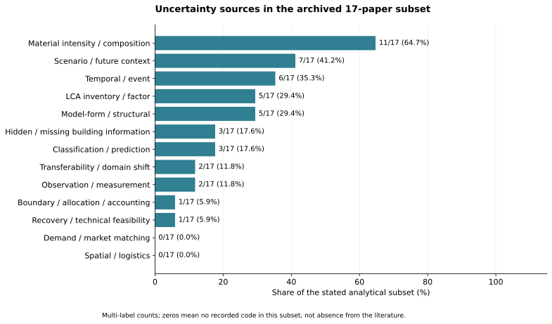
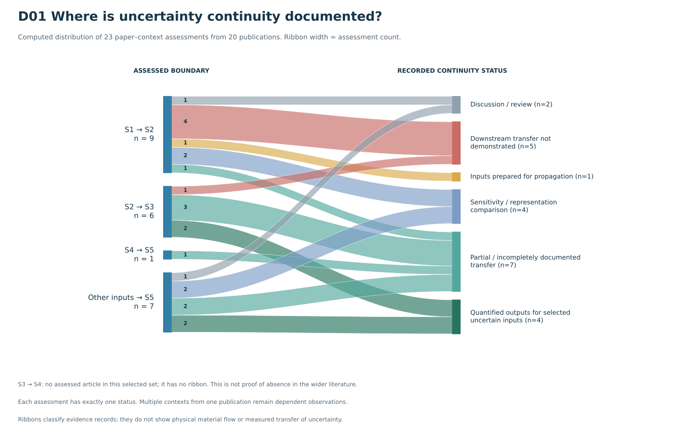
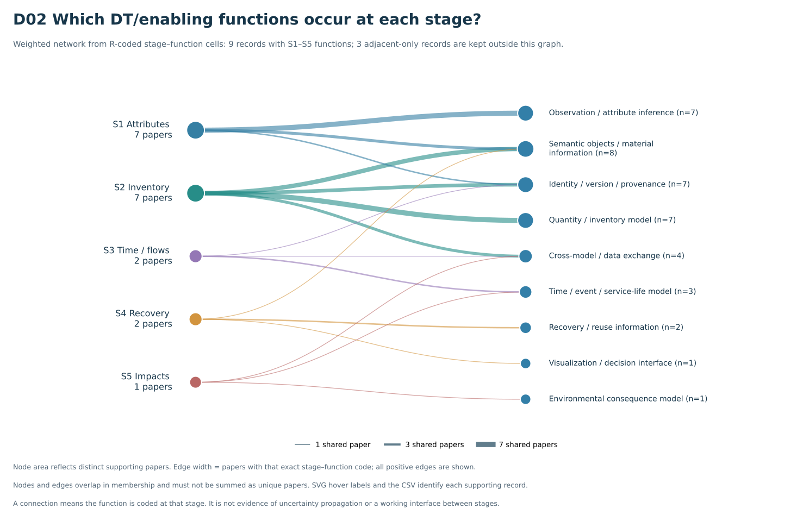
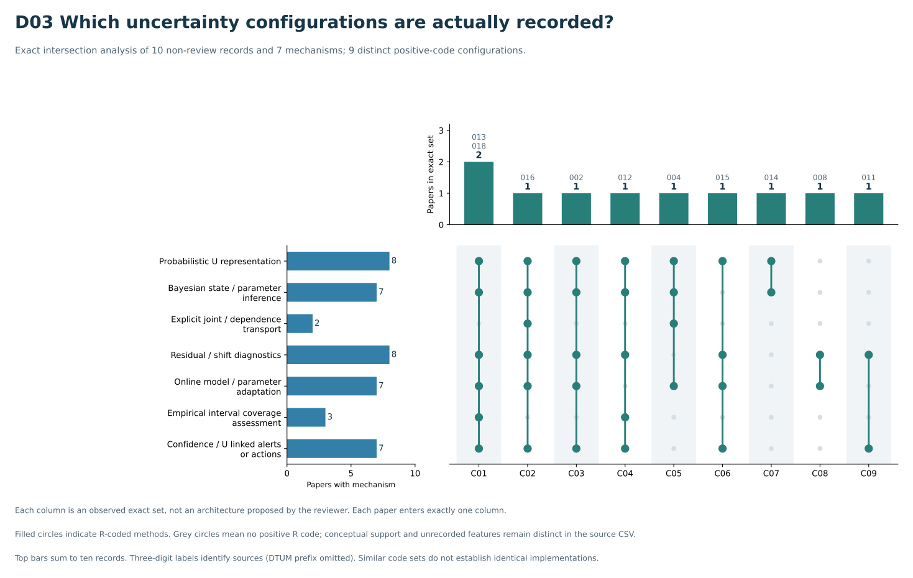
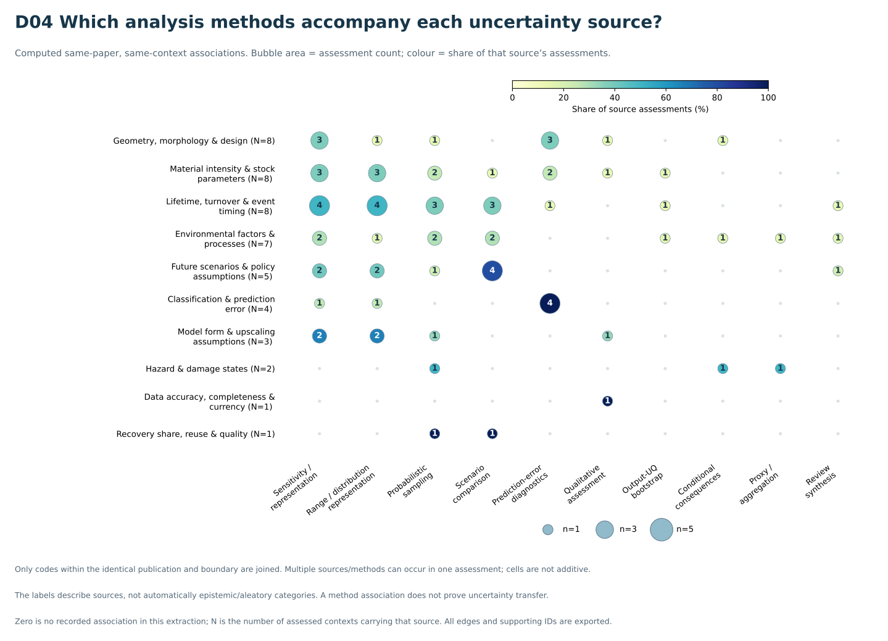
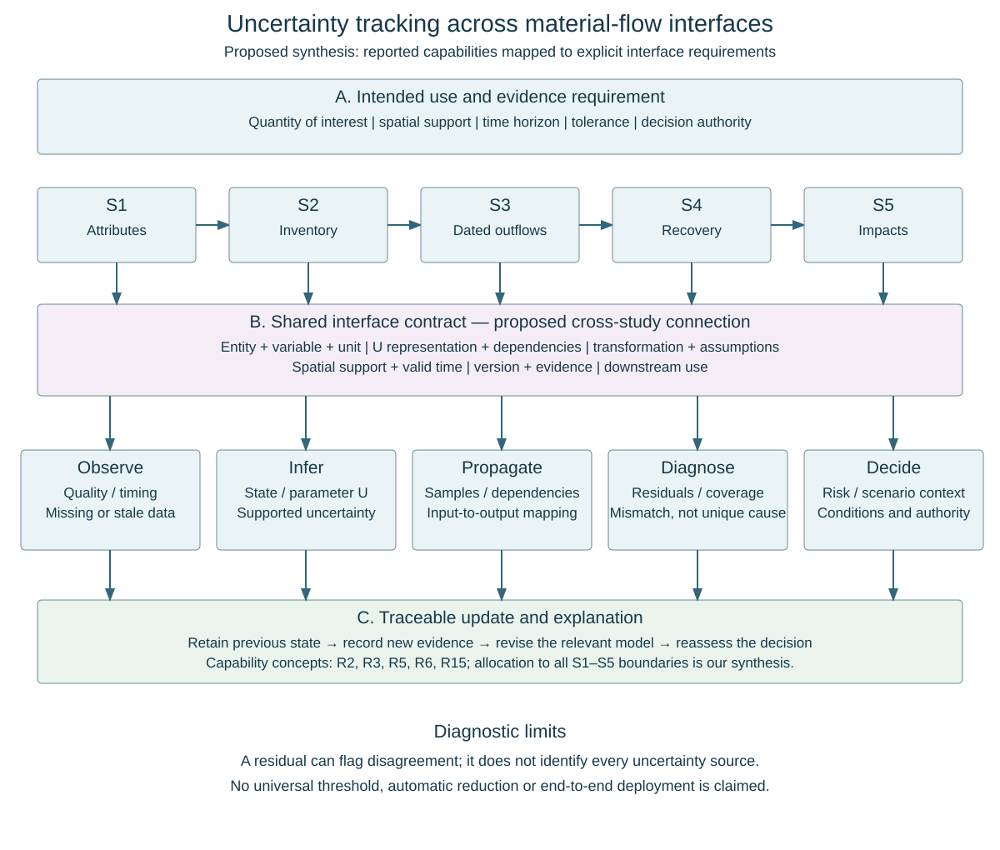

شکل 1. روند متصل مرور؛ طراحی مفهومی روش.
مقدمه · کارهای مرتبط · روش · نتایج · بحث
تحقق محیط ساختهشدهٔ چرخشی مستلزم درک این موضوع است که ساختمانهای موجود چگونه به منابع مصالح آینده تبدیل میشوند و مسیرهای مختلف بازیابی چه تأثیری بر پیامدهای محیطزیستی دارند. تولید مصالح یکی از منابع مهم انتشار گازهای گلخانهای است؛ در مقابل، افزایش بهرهوری مصرف مصالح و تغییر مصالح ساختمانی میتواند تقاضای آینده برای منابع و تراز کربن را تغییر دهد (Hertwich, 2021; Pauliuk et al., 2021; Churkina et al., 2020). بنابراین، چرخشیشدن فراتر از افزایش نرخ بازیافت است و به اتصال شناخت موجودی مصالح به امکانپذیری فنی بازیابی و جایگزینی معنادار از نظر محیطزیستی نیاز دارد. مرورهای حوزهٔ ساختوساز چرخشی، اقدامات، چارچوبهای مفهومی و موانع اجرایی متنوعی را در چرخهٔ عمر ساختمانها شناسایی کردهاند (Joensuu et al., 2020; Çimen, 2021; Mhatre et al., 2021; Akhimien et al., 2021). این دیدگاهها ضرورت ارزیابی بههمپیوستهٔ شواهد پشتیبان تصمیمهای چرخشی، از جمله عدم قطعیت همراه با تبدیل مشاهدات به پیامدهای محیطزیستی، را نشان میدهند.
ارزیابیهای یکپارچه، نقطهٔ آغاز بررسی این مسئلهاند. Mastrucci و همکاران، مشخصهیابی موجودی ساختمانها بر پایهٔ GIS و یک پایگاه دادهٔ مکانی–زمانی را به ارزیابی چرخهٔ عمر سناریوهای پایان عمر متصل میکنند تا از تصمیمهای مدیریت پسماند شهری پشتیبانی کنند (Mastrucci et al., 2017). Ajayebi و همکاران نیز هندسه و تاریخچهٔ ساخت ساختمانها را با برآورد موجودی محصولات و نقشهبرداری کربن نهفته برای معدنکاوی شهری آینده یکپارچه میکنند (Ajayebi et al., 2020). بااینحال، مشخصهیابی زمانی و موجودیِ معطوف به بازاستفاده در این مطالعه، به معنای پیشبینی کامل جریانهای خروجی قابل بازیابی نیست. Pei و همکاران نیز جریانهای کاری یکپارچهٔ تحلیل موجودی مصالح و LCA را از گردآوری داده تا مدلسازی موجودی و ارزیابی نتایج مرور میکنند (Pei et al., 2024). این مطالعات مسیرهای متصل ارزیابی را ارائه میکنند، اما در نحوهٔ لحاظکردن زمان، مدلسازی بازیابی و دامنهٔ ارزیابی محیطزیستی متفاوتاند.
چارچوب دیجیتال «از جنگل تا ساختمان» نیز اطلاعات مکانی، تولید و ساختمان را در یک زنجیرهٔ تأمین ساختوساز چوبی به LCA مبتنی بر نقش کنشگران و پشتیبانی تصمیم متصل میکند (Morganti et al., 2025). مرز این چارچوب با معدنکاوی شهری متفاوت است، اما اتصال میان زیرسیستمهای فنی و سازمانی را نشان میدهد. این رویکردهای یکپارچه، مبنای بررسی جریانهای کاری کامل پیش از تجزیهٔ تبدیلهای آنها به رابطهای تحلیلی هستند. مراحل حاصل باید از طریق مقایسهٔ این جریانهای کاری توجیه شوند، نه اینکه بهعنوان یک توالی پنجمرحلهای جهانشمول از پیش تحمیل شوند. مرز پژوهش از اطلاعات مکانی تا موجودی و جریان مصالح، بازیابی، ارزیابی محیطزیستی و پشتیبانی تصمیم امتداد دارد.
GeoAI با تفسیر دادههای مکانی ناهمگون، قابلیتهای مشاهده را گسترش میدهد (Wang et al., 2024; Mai et al., 2025). نقشهبرداری جرم سازهها و ترکیب تحلیل مکانی و تصویری برای مدلسازی پسماند تخریب، ارتباط مشاهده با حسابداری مصالح را نشان میدهد (Frantz et al., 2023; Bogoviku and Waldmann, 2021). این پیشرفتها مکمل روشهای تثبیتشدهٔ GIS هستند و به این معنا نیستند که چارچوبهای یکپارچهٔ قدیمیتر از GeoAI استفاده کردهاند. برآوردهای مراحل بعد به ویژگیهای استنباطشده، تفکیکپذیری و اعتبار آنها و فرضهای تبدیل این ویژگیها به مقادیر مصالح وابستهاند.
تغییرپذیری درون تیپهای ساختمانی و همبستگی اندازهٔ ساختمان با شدت مصرف مصالح، این تبدیل را پیچیده میکند (Dai et al., 2025; Miatto et al., 2023). رویکردهای یکپارچهٔ BIM–GIS نیز اطلاعات موجودی را در بازنماییهای مختلف سازماندهی میکنند (Elshaboury et al., 2025). بااینحال، جزئیات بیشتر موجودی بهخودیخود مشخص نمیکند که عدم قطعیت ویژگیهای استنباطشده چگونه بر جرم برآوردشده اثر میگذارد. بنابراین، رابطها هم به انتشار عددی عدم قطعیت مربوطاند و هم به سازگاری موجودیتها، طبقهبندیها و فرضهایی که مدلها را به یکدیگر متصل میکنند.
تبدیلهای بعدی، وابستگیهای زمانی و سناریویی را وارد فرایند میکنند. فرضهای طول عمر، نوسازی و توسعهٔ آینده، زمان تبدیل موجودی به جریان و ترکیب آن را تحت تأثیر قرار میدهند (Miatto et al., 2017; Göswein et al., 2021; Tang et al., 2021; Arehart et al., 2022). LCA پویا نیز بر تغییر شرایط ارزیابی در طول زمان تأکید دارد (Slavkovic and Stephan, 2025). پرسش تحلیلی این است که آیا چنین تبدیلهایی عدم قطعیت و وابستگیهای بالادست را حفظ میکنند یا سناریوهایی مستقل را جایگزین آنها میکنند.
ارزیابی بازیابی بررسی میکند که مصالح یا اجزای آزادشده میتوانند وارد چه مسیرهایی برای استفادهٔ بعدی شوند. گذرنامههای مصالح از مدیریت اطلاعات پایان عمر پشتیبانی میکنند و ارزیابی احتمالاتی قابلیت بازاستفاده به صلاحیت فنی اجزا میپردازد (Honic et al., 2021; Rakhshan et al., 2021). بنابراین، جریان خروجی برآوردشده با عرضهٔ قابل بازاستفاده برابر نیست. وضعیت فیزیکی، آلودگی، جداسازی و فرضهای بازیابی میتوانند مقدار واجد شرایط و مقصد آن را تغییر دهند. سپس ارزیابی محیطزیستی این مسیرها را به اثرات تبدیل میکند. روشهای ارزیابی بازاستفاده، پایگاههای دادهٔ چرخهٔ عمر و شیوههای ارزیابی در مرحلهٔ طراحی بر بازنمایی بارها و منافع اثر میگذارند (De Wolf et al., 2020; De Wolf et al., 2023; Roberts et al., 2020). در تفسیر نتایج نیز باید میان عدم قطعیت و تغییرپذیری تمایز قائل شد (Michiels and Geeraerd, 2020). رابط بازیابی–اثرات، پیامدهای نامطمئن بازیابی را به فرضهای جایگزینی، مرزهای سیستم و مشخصهسازی محیطزیستی متصل میکند.
اتصال محاسباتی بهتنهایی پیوستگی عدم قطعیت را اثبات نمیکند. انتقال یک خروجی الزاماً به معنای انتقال عدم قطعیت، وابستگیها یا شرایط اعتبار آن نیست. تمایز عدم قطعیت از تغییرپذیری در خود LCA نیز اهمیت دارد (Michiels and Geeraerd, 2020)؛ در اتصال مدلها، این تمایز باید در برابر تغییر موجودیتها، تجمیع فضایی، افق زمانی و روشها حفظ شود. در این پژوهش، پیوستگی عدم قطعیت به معنای حفظ قابلردیابی یا بازنگری صریح اطلاعات عدم قطعیت و وابستگیهای مرتبط در طول تبدیلهای متصل است. مرورهای یکپارچهسازی و ارزیابی پویا مبنایی برای بررسی این مسئله فراهم میکنند (Pei et al., 2024; Slavkovic and Stephan, 2025). پرسش این پژوهش آن است که پیوستگی در سطح رابطها تا چه حد نشان داده شده، کجا گسسته میشود و چه نیازهای ساختاری از آن ناشی میشود؛ بدون آنکه نادیدهگرفتهشدن عدم قطعیت در همهٔ مطالعات را پیشفرض قرار دهد.
دیجیتال تویینها میتوانند بستری معماری برای بررسی این اتصالها فراهم کنند. پژوهشهای تویین معنایی ساختوساز و مطالعات عمومیتر بر ارتباط موجودیتهای فیزیکی، بازنماییهای دیجیتال و فرایندهای بهروزرسانی تأکید دارند (Boje et al., 2020; Jones et al., 2020). مرورهای ساختوساز، فناوریها و کاربردها و تفاوت در پیادهسازی و بلوغ آنها را مستند کردهاند (Opoku et al., 2021; Tuhaise et al., 2023). مرورهای گستردهتر و مطالعات تعریف دیجیتال تویین نیز نشان میدهند که این عنوان بهتنهایی معرف قابلیت یکسان نیست (Sharma et al., 2022; Abdelrahman et al., 2025). چارچوبهای تویین ساختمان نیز گردآوری، یکپارچهسازی، مدلسازی و تحلیل را سازماندهی میکنند (Zhang et al., 2025). مسئلهٔ اصلی آن است که کدام قابلیتهای نشاندادهشده میتوانند روابط معنادار میان مشاهدات، وضعیت مصالح، جریانهای آینده و محاسبات محیطزیستی را حفظ کنند.
پژوهشهای دیجیتال تویین مجهز به تحلیل عدم قطعیت، منابع روششناختی مکملی فراهم میکنند. مرورهای کمّیسازی عدم قطعیت و ریسک نرمافزار و صورتبندیهای گرافیکی احتمالاتی نشان میدهند که عدم قطعیت چگونه میتواند در کنار مدلهای متصل و اطلاعات بهروزشونده بازنمایی شود (Lin et al., 2021; Kapteyn et al., 2021). انتقال این روشها به جریان چرخشی مصالح ساختمانی نیازمند بررسی سازگاری حوزهای است. شناسایی پایدار موجودیتها، ثبت منشأ اطلاعات، بازنمایی احتمالاتی، مدیریت وابستگیها، بهروزرسانی و ارتباط با تصمیمگیرندگان، کارکردهای احتمالی معماری مورد بررسیاند. مقیاس فضایی، اعتبار زمانی و نیازهای اطلاعاتی ذینفعان ابعادی فراگیر در معماری هستند. پایش پیوسته یا جزئیات بیشتر مدل، بهطور خودکار به کاهش عدم قطعیت تعبیر نمیشود؛ معماری باید تبدیلهای دارای پشتوانه و محدودیتهای حلنشده را قابل بررسی کند.
هدف، استخراج یک معماری دیجیتال تویین با قابلیت ردیابی به شواهد برای پیوستگی عدم قطعیت، از اطلاعات مکانی و مبتنی بر GeoAI تا ارزیابی اثرات محیطزیستی و پشتیبانی تصمیم است. ابتدا جریانهای کاری یکپارچه مقایسه میشوند تا رابطهای تحلیلی بر اساس تبدیلهای مستند آنها تعریف شوند. سپس شواهد عدم قطعیت در این رابطها، کاربردهای دیجیتال تویین در حوزهٔ مورد مطالعه و سازوکارهای قابل انتقال به یکدیگر متصل میشوند. چهار پرسش، سنتز را هدایت میکنند:
۱. چارچوبهای یکپارچهٔ موجود چگونه اطلاعات مکانی، موجودی و جریان مصالح، بازیابی، ارزیابی محیطزیستی و پشتیبانی تصمیم را متصل میکنند و از مقایسهٔ آنها چه رابطهایی به دست میآید؟
۲. چه اطلاعات عدم قطعیت و وابستگیهایی در این رابطها منتقل، تبدیل، بهروزرسانی یا حذف میشوند و این موضوع چگونه نشان داده شده است؟
۳. کدام قابلیتهای نشاندادهشدهٔ دیجیتال تویین به نیازهای شناساییشده پاسخ میدهند و تحت چه شرایط فضایی، زمانی و حکمرانی اطلاعات؟
۴. چگونه میتوان یافتهها را در معماریای سنتز کرد که میان اجزای دارای پشتوانهٔ مستقیم، تلفیق چند مطالعه و پیشنهادهای پاسخگو به شکافهای مستند تمایز بگذارد؟
بخش دوم پیشینه و مبانی مفهومی، بخش سوم روش متصل مرور، بخش چهارم نتایج و سنتز معماری و بخش پنجم بحث و محدودیتها را ارائه میکند. اثربخشی عملیاتی معماری به اعتبارسنجی بعدی نیاز دارد.
شناخت فرصتهای استفادهٔ چرخشی از مصالح ساختمان مستلزم اتصال اطلاعاتی است که معمولاً برای هدفهای متفاوت تولید میشوند. مشاهدات مکانی، ساختمان را توصیف میکنند؛ مدلهای موجودی، مقدار مصالح آن را برآورد میکنند؛ مدلهای پویا زمان و مقدار خروج مصالح را تخمین میزنند؛ و ارزیابی بازیابی و پیامدهای محیطزیستی مشخص میکند این جریانها برای استفادهٔ بعدی چه معنایی دارند. مطالعات یکپارچه، مبنای مناسبی برای بررسی این مسیر فراهم میکنند. Mastrucci و همکاران (2017) مشخصهیابی مکانی موجودی مصالح را به ارزیابی چرخهٔ عمر سناریوهای پایان عمر متصل کردهاند؛ Ajayebi و همکاران (2020) به برآورد مکانی و زمانی محصولات سازهای برای اقتصاد چرخشی آیندهنگر پرداختهاند؛ و Pei و همکاران (2024) ابزارها و روشهای اتصال تحلیل موجودی مصالح و ارزیابی چرخهٔ عمر در مقیاس شهری را مرور کردهاند. این مطالعات، اهمیت یکپارچگی را نشان میدهند، هرچند مرز سامانه و نحوهٔ مدلسازی تبدیلها در آنها یکسان نیست (Mastrucci et al., 2017; Ajayebi et al., 2020; Pei et al., 2024).
مقایسهٔ این جریانهای کاری، مبنای تفکیک پنج فعالیت تحلیلی است: مشاهده و استنباط ویژگیهای ساختمان (S1)، برآورد موجودی مصالح (S2)، مدلسازی تغییر موجودی و خروج مصالح (S3)، ارزیابی بازیابی و استفادهٔ بعدی (S4)، و ارزیابی پیامدهای محیطزیستی و پشتیبانی تصمیم (S5). این نامگذاری، زبان مشترک مرور حاضر برای مقایسهٔ مطالعات است؛ به این معنا نیست که همهٔ منابع، معماری پنجمرحلهای یکسانی ارائه کردهاند. بعضی فعالیتها در یک مدل ادغام میشوند، بعضی اتصالها پوشش داده نمیشوند و گاهی میان فعالیتها بازخورد وجود دارد. همچنین، چارچوبهای مکانی قدیمی را نباید بهطور پسنگر پیادهسازی GeoAI نامید. هوش مصنوعی مکانی ظرفیت تفسیر اطلاعات مکانی را گسترش میدهد و مطالعات ترکیب تحلیل تصویری و مکانی برای مدلسازی پسماند تخریب، ارتباط مشاهده با حسابداری مصالح را نشان میدهند (Wang et al., 2024; Bogoviku and Waldmann, 2021).
اهمیت این تفکیک در اطلاعاتی است که در مرز فعالیتها مبادله میشود. در S1–S2، ویژگی مشاهدهشده یا استنباطشده باید به تیپ ساختمان، ترکیب مصالح یا ضریب شدت مصرف مرتبط شود. در S2–S3، موجودی به برآوردی از زمان و مقدار خروج مصالح تبدیل میشود. مطالعات رابطهٔ اندازهٔ ساختمان با شدت مصرف مصالح و نقش فرضهای طول عمر نشان میدهند که این اتصالها، عملیات مدلسازیاند و صرفاً جابهجایی عدد نیستند (Miatto et al., 2023; Miatto et al., 2017). برآورد پاییندست ممکن است به همان طبقهبندی یا پارامتر نامطمئنی وابسته باشد که در محاسبهٔ بالادست استفاده شده است؛ مستقل فرضکردن این برآوردها میتواند معنای ارزیابی مشترک را تغییر دهد.
در مرز بعدی، پرسش دیگری مطرح میشود: مصالحی که خروج آنها پیشبینی شده، الزاماً منبع ثانویهٔ قابل استفاده نیستند. پژوهشهای گذرنامهٔ مصالح به اطلاعات لازم برای مدیریت پایان عمر میپردازند و ارزیابی احتمالاتی قابلیت بازاستفاده، مناسببودن فنی اجزا را بررسی میکند (Honic et al., 2021; Rakhshan et al., 2021). این مطالعات نیازهای اطلاعاتی فاصلهٔ میان خروج مصالح و استفادهٔ بعدی را آشکار میکنند. شرایط برداشت، جداسازی، کیفیت و تخصیص به مسیر بازاستفاده یا بازیافت باید مشخص شود تا پیامدهای محیطزیستی قابل تفسیر باشند. مقایسهٔ روشهای ارزیابی محیطزیستی بازاستفادهٔ اجزای ساختمان نیز اهمیت نحوهٔ بازنمایی استفادهٔ بعدی را نشان میدهد (De Wolf et al., 2020). بنابراین، S3–S4 و S4–S5 حتی در مدلهایی که چند فعالیت را همزمان محاسبه میکنند، مرزهای تحلیلی معناداری هستند.
عدم قطعیت باید در همین زنجیرهٔ تبدیلها تفسیر شود. Michiels و Geeraerd (2020) در بررسی انتشار و نمایش عدم قطعیت در ارزیابی چرخهٔ عمر، میان ناکاملبودن دانش و تغییرپذیری تمایز میگذارند (Michiels and Geeraerd, 2020). این تمایز برای مرور حاضر ضروری است: تفاوت واقعی ساختمانها، عدم اطمینان دربارهٔ ویژگی استنباطشدهٔ یک ساختمان و سناریوهای جایگزین بازیابی، معنای یکسانی ندارند. توزیع احتمال، بازه، مجموعهٔ سناریوها و توصیف کیفی کیفیت داده نیز اطلاعات متفاوتی ارائه میکنند. ممکن است عدم قطعیت درون یک مدل با دقت بررسی شود، اما بازنمایی آن هنگام ورود خروجی به مدل بعدی حفظ نشود.
در این مرور، «پیوستگی عدم قطعیت» به حفظ قابل ردیابی یا بازنگری صریح اطلاعات عدم قطعیت، وابستگیهای مرتبط و شرایط اعتبار در طول تبدیلها اشاره دارد. این یک مفهوم تحلیلی برای پژوهش حاضر است؛ نه ادعای استفادهٔ همهٔ مطالعات از اصطلاحی مشترک و نه الزام به ثابتماندن مقدار عدم قطعیت. انتشار میتواند توزیع خروجی را تغییر دهد؛ مشاهدهٔ جدید میتواند مبنای بهروزرسانی باشد؛ تجمیع میتواند واحد مکانی تحلیل را عوض کند؛ و تصمیم بازیابی میتواند کمیتی پیوسته را به طبقهٔ صلاحیت تبدیل کند. در مقابل، ممکن است بازه با یک مقدار نقطهای جایگزین شود یا منشأ لازم برای تفسیر آن گزارش نشود. مسئله این است که آیا این تغییر مستند است و در مرحلهٔ بعد قابل استفاده میماند. نبود توضیح کافی در مقاله، بهتنهایی اثبات نمیکند که اطلاعات در اجرای واقعی از دست رفته است.
ادبیات دوقلوی دیجیتال، زمینهٔ دیگری برای بررسی ارتباط میان موجودیت فیزیکی، بازنمایی دیجیتال و فرایندهای بهروزرسانی فراهم میکند. Jones و همکاران (2020) ویژگیهای این مفهوم را در یک مرور سیستماتیک بررسی کردهاند و Boje و همکاران (2020) مسیرهای توسعهٔ دوقلوی معنایی ساختوساز را مطرح کردهاند (Jones et al., 2020; Boje et al., 2020). مرورهای حوزهٔ ساختمان نیز کاربردها و فناوریهای توانمندساز را بررسی میکنند (Opoku et al., 2021; Tuhaise et al., 2023). این مطالعات نشان میدهند که باید قابلیتهای سامانه را بررسی کرد و از نام DT به وجود آنها نرسید. مدل هندسی ممکن است دارایی را بازنمایی کند، بدون آنکه اتصال داده را حفظ کند؛ بازنمایی بهروزشونده ممکن است پایش را ممکن کند، بدون آنکه انتشار احتمالاتی را اجرا کند؛ و معماری مفهومی ممکن است خدماتی را توصیف کند که هنوز عملیاتی نشدهاند.
اختلاف تعریفها در محیط ساختهشده اهمیت بیشتری پیدا میکند. Abdelrahman و همکاران (2025) تعریفها و مؤلفههای DT را میان حوزهها مقایسه کرده و میان دوقلوهای بلادرنگ با عملکرد بالا و دوقلوهای پشتیبان تصمیم بلندمدت تمایز میگذارند (Abdelrahman et al., 2025). تحلیل آنها نشان میدهد که بلادرنگبودن، تبادل دوطرفه و قابلیت پیشبینی را نباید در همهٔ کاربردها به یک اندازه بالغ یا الزامی فرض کرد. برای ارزیابی جریان مصالح، بهروزرسانی ممکن است پس از برداشت میدانی، نوسازی یا تغییر شرایط بازیابی انجام شود. پرسش اصلی این است که آیا زمان و محتوای این بهروزرسانی، اعتبار ارزیابی متصل را حفظ میکند؛ وجود جریان پیوستهٔ حسگر بهتنهایی پاسخ این پرسش نیست.
پژوهشهای دوقلوی آگاه از عدم قطعیت، سازوکارهایی برای بررسی این مسئله فراهم میکنند. Kapteyn و همکاران (2021) پویایی متصل دارایی و دوقلو را در قالب مدل گرافیکی احتمالاتی صورتبندی کرده و کالیبراسیون و بهروزرسانی را در کاربردی مرتبط با هواگرد نشان دادهاند (Kapteyn et al., 2021). Lin و همکاران (2021) نیز کمّیسازی عدم قطعیت و ریسک نرمافزاری را در سامانههای مدیریت و کنترل مبتنی بر DT مرور کردهاند (Lin et al., 2021). این آثار پشتوانهٔ بررسی بازنمایی احتمالاتی وضعیت، وابستگی و بهروزرسانی بهعنوان قابلیت معماری هستند؛ اما اثبات نمیکنند که همین سازوکارها، پیوستگی عدم قطعیت را از مشاهدهٔ ساختمان تا تصمیم مصالح چرخشی برقرار کردهاند. تناسب آنها باید با توجه به موجودیتها، کمیتها، فرایندهای زمانی و شرایط اعتبارسنجی حوزهٔ هدف بررسی شود.
به این ترتیب، سه حوزهٔ ادبیات در رابط فعالیتها به هم میرسند. مطالعات جریان مصالح، کمیتها و تبدیلهای نیازمند پیوستگی را مشخص میکنند؛ پژوهش عدم قطعیت توضیح میدهد چه اطلاعاتی باید حفظ یا بازنگری شود؛ و پژوهش DT راههایی برای اتصال بازنماییها، مشاهدات و خدمات تحلیلی ارائه میکند. مقیاس مکانی، اعتبار زمانی و نیاز اطلاعاتی ذینفعان، شرایط این اتصالها را تعیین میکنند. برای مثال، مقیاسپذیری ساختار نرمافزار بهتنهایی نشان نمیدهد که فرضهای مصالح از ساختمان به محله و منطقه معتبر میمانند. همچنین، نمایش عدم قطعیت در داشبورد، نحوهٔ تولید و انتقال آن را اثبات نمیکند.
مرورهای پیشین مبانی مکملی فراهم کردهاند: Pei و همکاران (2024) اتصال موجودی و LCA، Michiels و Geeraerd (2020) عدم قطعیت و تغییرپذیری، و Abdelrahman و همکاران (2025) تعریفها و مؤلفههای DT را بررسی کردهاند (Pei et al., 2024; Michiels and Geeraerd, 2020; Abdelrahman et al., 2025). مرور حاضر این دیدگاهها را در یک مقایسهٔ مشترک مبتنی بر رابطها به هم متصل میکند: کدام اتصال مرتبط با عدم قطعیت مستقیماً مستند است، کدام اتصال از تلفیق مطالعات سازگار حاصل میشود و کدام پاسخ پیشنهادی به محدودیتی شناساییشده است؟ هدف، سنتز معماری قابل ردیابی به شواهد است؛ بدون پیشفرضگرفتن فقدان همهٔ اتصالها در ادبیات و بدون ادعای پیادهسازی یا اعتبارسنجی یک دوقلوی سرتاسری جدید.
این مرور، شواهد جریان کاری مصالح، عدم قطعیت و قابلیتهای دوقلوی دیجیتال را از طریق یک واحد تحلیلی مشترک به هم متصل میکند: رابط مستند میان دو فعالیت. خانوادههای جستوجو مسیرهای مکمل دسترسی به این شواهد هستند و به مرورهایی با نتیجههای جداگانه تبدیل نمیشوند. چهار پرسش به هم پیوسته، تحلیل را هدایت میکنند: چه تبدیلهایی S1–S5 را متصل میکنند؛ عدم قطعیت در این تبدیلها چه تغییری میکند؛ کدام قابلیت DT با شرایط گزارششده تناسب دارد؛ و این یافتهها چگونه از معماری قابل ردیابی به شواهد پشتیبانی میکنند؟ گزارش انتخاب مطالعات از PRISMA 2020 و مستندسازی جستوجو از PRISMA-S استفاده میکند (Page et al., 2021; Rethlefsen et al., 2021). این راهنماها جایگزین روش استخراج و سنتز شرحدادهشده در ادامه نیستند.
برای انتشار p و رابط i→j، رکورد مشترک استخراج شامل موجودیت، ورودی، تبدیل، خروجی، عدم قطعیت ورودی و خروجی، وابستگیها، کارکرد DT، زمینه و شاهد است. موجودیت میتواند ساختمان، جزء یا مصالح باشد؛ زمینه، واحد مکانی، اعتبار زمانی و نیاز اطلاعاتی استفادهکننده را در بر میگیرد؛ و شاهد شامل شناسهٔ انتشار و محل استناد در صفحه، بخش، معادله یا شکل است. در صورت لزوم، کارکرد DT با «نامرتبط» یا «گزارشنشده» ثبت میشود. به این ترتیب، مطالعهٔ جریان مصالح فاقد DT و مطالعهٔ سازوکار DT میتوانند از طریق یک نیاز اطلاعاتی مشخص مقایسه شوند، بدون ادعای اجرای سامانهای یکسان. شکل ۱ مسیر متصل پژوهش و شکل ۲ منطق اتصال تحلیلها را نشان میدهد.
جستوجوی پایگاهمحور Scopus، مجموعهٔ اصلی Web of Science و IEEE Xplore را پوشش میدهد. Base که با S نیز نمایش داده میشود، به جستوجوهای مرحلهای ساختمان و جریان مصالح اشاره دارد؛ U مخفف عدم قطعیت و DT مخفف دوقلوی دیجیتال است. چهار خانوادهٔ حوزه شامل Base، Base+U، Base+DT و Base+DT+U هستند. جستوجوهای عمومی DT و DT+U نیز شواهد تعریف و سازوکارهای قابل انتقال را فراهم میکنند و منشأ خارج از حوزهٔ آنها حفظ میشود. جستوجوی تکمیلی جریانهای کاری یکپارچه محدودیت سال یا ناشر ندارد. محدودیتهای دقیق هر جستوجو از گزارش همان اجرا استخراج میشود و برای همهٔ اجراهای تاریخی یکسان فرض نمیشود.
در Scopus از TITLE-ABS-KEY و در Web of Science از Topic استفاده میشود که Keywords Plus را نیز در بر میگیرد. میدانهای IEEE و نسخههای تقسیمشدهٔ جستوجو در گزارش اجرا حفظ میشوند. منطق کلی عبارت است از Q(i,k)=B(i,k) AND S(i) AND optional(U) AND optional(DT). در این رابطه، k نسخهٔ کوئری را مشخص میکند؛ زیرا بعضی جستوجوهای تاریخی DT بلوک حوزهٔ گستردهتری از Base داشتهاند. بنابراین، نمودار منطقی خانوادهها به معنای زیرمجموعهبودن لفظبهلفظ تمام کوئریهای تاریخی از یک عبارت پایهٔ یکسان نیست.
جدول ۱ مفاهیم سازماندهندهٔ بازیابی را ارائه میکند. عبارتهای آرشیوشده، شروط حذف و صورت متناسب با هر پایگاه در مکمل S1 و فایل کوئریهای بازیابیشدهٔ S1–S3 حفظ میشوند. جزئیات تاریخیِ بازیابینشده در ممیزی علامتگذاری میشوند و بهعنوان جستوجوی اجراشده بازسازی نمیشوند. مثالهای توضیحی این بخش نیز جستوجوی جدید تلقی نمیشوند.
جدول بلوکهای جستوجو، معادلات شمارش و کنترل بازتولیدپذیری در مکمل ارائه شدهاند. توزیع پیوستگی بر مبنای زمینههای ارزیابیشدهٔ مقاله–مرز محاسبه میشود و هر زمینه فقط یک وضعیت دارد. یال مرحله–کارکرد تعداد مقالات متمایز دارای همان کد مشترک را نشان میدهد؛ عضویتها همپوشاناند و جمع آنها تعداد مقالهٔ یکتا نیست.
چهار ترکیب حوزه عبارتاند از B AND S(i)، سپس افزودن U، افزودن DT و افزودن همزمان DT و U. در جستوجوی عمومی DT+U، قید ساختمان و مرحله حذف میشود. اصطلاحات گستردهٔ U پوشش بازیابی را افزایش میدهند، اما وجود تحلیل عدم قطعیت را ثابت نمیکنند؛ حساسیت، کالیبراسیون و استواری باید از متن روش تفسیر شوند. عضویتها پس از حذف تکراری در سطح انتشار ثبت میشوند و همپوشانی واقعی از شناسهها محاسبه میشود، نه از نام کوئری یا جمع تعداد پایگاهها (Rethlefsen et al., 2021).
صلاحیت هر انتشار متناسب با نقش آن در سنتز بررسی میشود. مطالعهٔ حوزه باید فعالیت یا تبدیلی مرتبط با ارزیابی مصالح ساختمان را توضیح دهد. شاهد U باید کمیت، فرض یا تصمیم متأثر و نحوهٔ بررسی آن را مشخص کند؛ اشارهٔ عمومی به عدم قطعیت برای ادعای سازوکار کافی نیست. شاهد DT باید بازنمایی، اتصال داده، بهروزرسانی یا کارکرد تحلیلی را شرح دهد. مقالهٔ معماری میتواند شاهد مفهومی باشد، بدون آنکه پیادهسازی عملیاتی نامیده شود. سازوکارهای خارج از حوزه و مرورهای ثانویه بهصورت شواهد مکمل مشخص میشوند. پوشش تمام پنج مرحله یا نمایش موفق پیوستگی عدم قطعیت شرط ورود نیست.
خروجی اصلی پایگاهها حفظ و DOIها نرمالسازی میشوند. موارد فاقد DOI با شناسهٔ بومی و اطلاعات کتابشناختی بررسی میشوند. عنوان مشابه، DOI متعارض و نسخههای کنفرانسی و مجلهای به تصمیم جداگانه نیاز دارند. تکرار یک انتشار از گزارشهای متعدد یک مطالعه تفکیک میشود. عضویت در چند جستوجو حفظ میشود، بدون افزایش تعداد انتشارات یکتا.
انتخاب از شناسایی، حذف تکراری، غربالگری عنوان و چکیده، دریافت متن کامل، ارزیابی صلاحیت و ورود به سنتز عبور میکند. هویت، کاملبودن و جزئیات روش متن بررسی میشود. چکیده یا پیشنمایش ناقص، مبنای استخراج سازوکار متن کامل نیست. گزارش دریافتنشده یا فاقد امکان ارزیابی کافی وارد سنتز نهایی نمیشود؛ بااینحال، سابقهٔ آن باقی میماند. دریافتنشدن از خروج پس از ارزیابی تفکیک میشود و متن در دسترس اما خواندهنشده، در انتظار بررسی میماند. تعداد هدف برای مقالات نهایی تعیین نمیشود.
برای خروج متن کامل، یک دلیل اصلی و در صورت لزوم توضیح تکمیلی ثبت میشود: خارج از حوزهٔ جریان مصالح؛ فاقد کارکرد مرتبط DT برای سنتز اختصاصی DT؛ فاقد بررسی محتوایی U برای سنتز اختصاصی U؛ یا فاقد جزئیات روش کافی برای نقش تحلیلی مورد نظر. یک مقاله ممکن است از تقاطع سختگیرانهٔ سه حوزه خارج شود، اما برای جریان مکمل مناسب بماند. دلیل و محل شاهد حفظ میشوند و گزارش PRISMA این تفاوتها را منعکس میکند (Page et al., 2021).
انتساب مرحله بر اساس عملیاتی انجام میشود که مقاله واقعاً گزارش کرده است. یال S(i)→S(j) زمانی ثبت میشود که استفادهٔ خروجی بالادست در فعالیت پاییندست مستند باشد؛ ذکر دو مرحله بهتنهایی اتصال را ثابت نمیکند. اتصالهای غیرمجاور و بازخورد نیز حفظ میشوند. جدول ۲ پرسشهای مشترک استخراج را در چهار رابط مجاور مشخص میکند. این جدول دستور بررسی است و نتیجهٔ پیادهسازی همهٔ تبدیلها در مطالعات نیست.
| رابط | تبدیل مورد بررسی | اطلاعات عدم قطعیت برای ردیابی | قابلیت DT برای بررسی تناسب |
| S1→S2 | مشاهده و ویژگی به مقدار مصالح | طبقهبندی، هندسه، شدت مصرف و وابستگی آنها | شناسه، نگاشت معنایی، منشأ و کیفیت داده |
| S2→S3 | موجودی به خروج وابسته به زمان | عدم قطعیت موجودی، طول عمر، بقا و سناریو | بازنمایی وضعیت و زمان، اتصال مدل پویا و نسخهبندی |
| S3→S4 | مصالح خروجی به عرضهٔ قابلبازیابی | زمان، وضعیت، بازده جداسازی، کیفیت و صلاحیت مسیر | بهروزرسانی وضعیت، ردیابی جزء و اتصال خدمت بازیابی |
| S4→S5 | مسیر بازیابی به پیامد و تصمیم | بازده، جایگزینی، تخصیص، ضرایب اثر و فرضهای مشترک | اتصال خدمت ارزیابی، منشأ سناریو و ارتباط با تصمیم |
استخراج میان منبع، ماهیت، بازنمایی و عملیات عدم قطعیت تفاوت میگذارد. عدم قطعیت پارامتر، مدل و سناریو، در حد اطلاعات مقاله از تغییرپذیری مکانی و زمانی جدا ثبت میشود (Michiels and Geeraerd, 2020). بازنمایی میتواند توزیع، نمونهها، بازه، سناریو یا توصیف کیفی کیفیت باشد. کوواریانس، همبستگی، پارامتر مشترک و فرض صریح استقلال نیز ثبت میشوند. نبود اطلاعات وابستگی به معنای استقلال کدگذاری نمیشود.
وضعیت رابط با کدهای عملیاتیِ قابل همزمانی ثبت میشود: انتقال، تبدیل، بهروزرسانی، ورود عدم قطعیت جدید و کنارگذاشتن مستند. ناکافیبودن گزارش، وضعیت جداگانه دارد. کاهش عدم قطعیت به مقایسه و شاخص مشخص نیاز دارد و صرف بهبود دقت پیشبینی آن را اثبات نمیکند. بیان نویسندگان از تفسیر مرورگر تفکیک میشود. هر ادعای سازوکاری، محل شاهد و یادداشت کوتاه دارد. مقیاس، تفکیک زمانی، محرک بهروزرسانی، دورهٔ اعتبار و نقش اطلاعاتی ذینفعان بهعنوان شرایط همان رابط ثبت میشوند.
کدگذاری DT تعریف نویسندگان، مرجع فیزیکی، بازنمایی دیجیتال، اتصال داده، جهت و تناوب بهروزرسانی، خدمت تحلیلی و بلوغ نشاندادهشده را ثبت میکند (Jones et al., 2020; Boje et al., 2020; Abdelrahman et al., 2025). بلادرنگبودن یا کنترل دوطرفه الزام جهانشمول نیست و مدل BIM یا GIS نیز خودکار دوقلوی عملیاتی محسوب نمیشود. تمایز مدلسازی احتمالاتی از بهروزرسانی نشاندادهشدهٔ دارایی و دوقلو، با اتکا به ادبیات DT و عدم قطعیت بررسی میشود (Kapteyn et al., 2021; Lin et al., 2021).
برای هر رابط، زنجیرهٔ استدلال چنین است: محدودیت مشاهدهشده ← نیاز اطلاعاتی ← قابلیت گزارششدهٔ DT ← شرایط سازگاری ← اتصال معماری قابل پشتیبانی. سازگاری از نظر موجودیت، معنای متغیر، واحد، محدودهٔ مکانی، افق زمانی و بازنمایی وابستگی بررسی میشود. برای مثال، بهروزرسانی بیزیِ یک حوزهٔ دیگر صرفاً به دلیل حضور عدم قطعیت به S3–S4 نسبت داده نمیشود؛ باید مشخص شود کدام وضعیت مرتبط با بازیابی، با چه مشاهده و چه فرضی بهروزرسانی میشود. اگر این ارتباط از تلفیق مطالعات حاصل شده باشد، بهعنوان سنتز ثبت میشود، نه پیادهسازی اثباتشده در حوزه.
همان رکوردهای رابط، سه ماتریس متصل تولید میکنند: رابط × عملیات عدم قطعیت؛ رابط × قابلیت DT؛ و قابلیت DT × عملیات عدم قطعیت. هر خانهٔ دارای شاهد به شناسهٔ انتشار و شواهد پشتیبان متصل است. جدول اتصال چهارم هر سه بُعد را به هم پیوند میدهد و مشخص میکند ارتباط درون یک مطالعه گزارش شده یا از تلفیق مطالعات حاصل شده است. کنار هم گذاشتن مقالههای مستقل، خودبهخود زنجیرهٔ کامل S1–S5 را اثبات نمیکند. شکل ۲ رکورد مشترکی را نشان میدهد که این تحلیلها را متصل نگه میدارد.
برای مجموعهٔ واجد شرایط C، مقدار n(i,u,d) تعداد انتشارات یکتایی است که رابط i، عملیات عدم قطعیت u و قابلیت DT با نماد d را همراه یکدیگر پشتیبانی میکنند. شمارش مستقیم درون مقاله و سنتز میانمطالعهای جدا گزارش میشوند؛ اتصال استنباطی فراوانی تجربی را افزایش نمیدهد. پوشش هر ویژگی، نسبت تعداد انتشارات پشتیبان به تعداد انتشارات واجد شرایط و ارزیابیشدهٔ همان تحلیل است. مخرج و موارد گزارشنشده همراه شکل ارائه میشوند. در کدگذاری چندبرچسبی، مجموع دستهها میتواند از تعداد انتشار یکتا بیشتر باشد؛ اهمیت تفکیک شمار مقاله از مشارکت در دستهها در روش Falsafi و همکاران (2025) نیز دیده میشود (Falsafi et al., 2025).
خروجیهای توصیفی شامل نقشهٔ حرارتی شواهد، نمودار همپوشانی و شبکهٔ رابطهاست. خط، اتصال کدگذاریشده را نشان میدهد نه علیت؛ ضخامت، تعداد تعریفشده را نشان میدهد نه اثربخشی. شمارش زمانیِ جمعشدهٔ پایگاهها، رخداد پایگاهی نامیده میشود، مگر حذف تکراری در سطح رکورد انجام شده باشد. برای دستههای همپوشان، اعتبار آزمون آماری فرض نمیشود و اختلاف بصری بدون طراحی آزمون مناسب «معنادار» نام نمیگیرد. پیامدهای ناهمگون در فراتحلیل اثربخشی تجمیع نمیشوند.
اجزای معماری در سه وضعیت قرار میگیرند: پشتوانهٔ مستقیم، تلفیق مطالعات سازگار، یا پیشنهاد پاسخ به گپ مستند. بنابراین هر ماژول و اتصال، هم به شاهد و هم به نیاز رابط مرتبط میشود. محدودیت گزارششده، فقدان گزارش و نبود موضوع در مجموعهٔ بازیابیشده یکسان نیستند. ساختار حاصل، سنتز مفهومی مرور است و اثربخشی عملیاتی و تعمیم بین مقیاسها به اعتبارسنجی بعدی نیاز دارد.
در زیرمجموعهٔ غیرمروری DT–U، هر مقاله با بردار z(p)=(z1,...,z7) نمایش داده میشود؛ zk برای سازوکار دارای کد R برابر یک و در غیر این صورت صفر است. هفت بُعد شامل بازنمایی احتمالاتی، استنباط بیزی وضعیت یا پارامتر، انتقال صریح وابستگی، تشخیص باقیمانده یا تغییر توزیع، انطباق برخط، بررسی پوشش بازه و هشدار یا اقدام مرتبط با عدم قطعیت هستند. وضعیت اصلی C و NR جدا حفظ میشود؛ صفر در این تصویر دودویی به معنای نبود قابلیت نیست. خانوادهٔ مرور و معماری مرجع از این تحلیل ترکیب کنار گذاشته میشود.
برای هر الگوی مشاهدهشده v، فراوانی تقاطع دقیق h(v) برابر تعداد مقالههایی است که z(p)=v دارند. هر مقاله دقیقاً وارد یک الگو میشود و مجموع فراوانی الگوها برابر N است. فراوانی حاشیهای سازوکار k از مجموع v(k)h(v) به دست میآید. ستونها بر اساس فراوانی، سپس تعداد کد مثبت و در حالت تساوی با ترتیب ثابت الگوی دودویی مرتب میشوند. این نمایش تقاطع دقیق به سبک UpSet است؛ نه خوشهبندی، رتبهٔ بلوغ یا توالی علّی. یکسانی الگوی مثبت، یکسانی پیادهسازی را اثبات نمیکند؛ زمینه و وضعیتهای C و NR میتوانند متفاوت باشند.
برچسب منبع و روش با کلید مرکب شناسهٔ مقاله و زمینه متصل میشوند؛ نه فقط شناسهٔ مقاله. اگر A(q) مجموعهٔ زوجهای دارای منبع q و A(m) مجموعهٔ زوجهای دارای روش m باشد، شمار خانه n(q,m)=|A(q)∩A(m)| و مخرج ردیف N(q)=|A(q)| است. رنگ، درصد 100n(q,m)/N(q) و مساحت حباب، 150n(q,m) پوینت مربع را نشان میدهد. درصد برای ردیف فاقد منبع تعریفنشده است، نه صفر. ترتیب ردیف و ستون بر اساس فراوانی ارزیابی و در تساوی بر اساس ترتیب فرهنگ کدگذاری است.
چون کدگذاری چندبرچسبی است، مجموع درصد ردیف الزاماً ۱۰۰ نیست. این اتصال هموقوعی در زمینهٔ ارزیابی یکسان را نشان میدهد، نه اینکه روش مشخصاً روی همان منبع اعمال شده است. برای مثال، زمینهای با دو منبع و دو روش، چهار خانهٔ هموقوعی ایجاد میکند؛ ادعای بررسی اختصاصی یک منبع با یک روش، رابطهٔ مستند اضافی میخواهد. برچسبهای منبع خودکار معرفتی یا تصادفی تلقی نمیشوند. تشخیص خطای پیشبینی و مقایسهٔ سناریو نیز خودکار انتشار احتمالاتی نیستند.
D01 وضعیت ثبتشدهٔ پیوستگی مرز را مشخص میکند؛ D04 منابع و روشهای همراه آن را نشان میدهد؛ D02 جایگاه قابلیتهای حوزه را مشخص میکند؛ و D03 ترکیب سازوکارهای DT عمومی را فراهم میکند. اتصال معماری بر رکورد مرز استوار است و شناسهٔ مرز، متغیر مصالح و واحد آن، منبع و بازنمایی عدم قطعیت، وضعیت پیوستگی، روش، قابلیت DT، محرک بهروزرسانی، اعتبار مکانی و زمانی، محل شاهد و نوع پشتوانه را نگه میدارد. اتصال درون مقاله از سنتز مطالعات سازگار و پیشنهاد جدید جدا میشود. ترکیبهای DT عمومی بهعنوان پیادهسازی S1–S5 بازنامگذاری نمیشوند.
برای هر مرز، نتایج تعداد مقاله و زمینهٔ ارزیابیشده، توزیع وضعیت پیوستگی، تبدیل متغیرهای مستند، قابلیتهای نامزد DT و وضعیت شاهد هر اتصال پیشنهادی را گزارش میکند. بنابراین نمودار انتقال میتواند حفظ، تبدیل، ورود عدم قطعیت جدید یا گزارش ناکافی را نشان دهد، بدون تفسیر یال مرحله–قابلیت بهعنوان انتقال عدم قطعیت. پوشش خالی B34 قابل مشاهده میماند و با انتقال ارزیابی O5 به B45 یا شمردن مرور بهعنوان آزمایش مستقل پر نمیشود.
ارزیابی شامل منشأ داده، بیان فرضها، برخورد با وابستگی، اعتبارسنجی، شرایط سناریو و بازتولیدپذیری است. نمایش مصنوعی، آزمون تجربی و پیشنهاد مفهومی از هم تفکیک میشوند. برای طرحهای ناهمگون، امتیاز عددی واحد تحمیل نمیشود. دفتر تصمیم، منبع، نقش، دلیل صلاحیت و محل شاهد را نگه میدارد و کد و دادهٔ شمارش همراه شکلها ارائه میشوند. جایی که غربالگری مستقل دو پژوهشگر انسانی مستند نیست، چنین فرایندی ادعا نمیشود.
شکل ۳ نمودار وضعیت ممیزی به سبک PRISMA برای جستوجوی گستردهٔ Base+DT+U است و جریان نهایی همهٔ سناریوها نیست. تعدادها از دفتر تصمیم آرشیوشده خوانده میشوند. شکل ۴ تصمیمهای مجموعههای متمرکزِ قبلاً منتخب را نشان میدهد؛ این مجموعهها زیرمجموعههایی دارای همپوشانیاند، نه جستوجوهای مستقل افزوده. مسیرهای گستردهٔ Base، Base+U، Base+DT و DT عمومی هنوز تا Included بسته نشدهاند. موارد در انتظار بررسی وارد سنتز محتوایی جاری نمیشوند، اما در ممیزی قابل مشاهده میمانند. تکمیل تصمیمها شرط جایگزینی این شکلها با نمودار نهایی قابل ارسال است. این یادداشت وضعیت باید پس از بستهشدن مرور بهروزرسانی شود، نه اینکه در زمان ناتمامبودن کار حذف شود.
شکل 1. روند متصل مرور؛ طراحی مفهومی روش.
شکل مکمل S1 را ببینید.

شکل 2. ممیزی انتخاب گسترده؛ صلاحیت ناتمام به خروج تبدیل نشده است.

شکل 3. تصمیم مجموعههای متمرکز؛ زیرمجموعههای همپوشان و نه جستوجوی مستقل اضافی.
تحلیلهای موجود نشان میدهند اتصال میان اطلاعات ساختمان، حسابداری مصالح و تصمیمگیری همراه با عدم قطعیت، در طول زنجیره یکسان نیست. این نتیجه از چند زیرمجموعهٔ مرتبط به دست میآید که مخرج شمارش آنها قابل جایگزینی نیست. تحلیل آرشیوی S1–S3 شامل ۱۷ مقاله با کدگذاری مبتنی بر متن کامل یا اطلاعات تکمیلی است. تحلیل رابطهای فعلی S+U شامل ۲۰ مقاله و ۲۳ زمینهٔ ارزیابیشده است. تحلیل کارکردهای DT در حوزه، ۹ مقاله با کد کارکرد در S1–S5 دارد؛ سه رکورد مربوط به حوزههای مجاور وارد آن شبکه نشدهاند. تحلیل پیکربندیهای عمومی DT+U نیز شامل ۱۰ مقالهٔ غیرمروری است. این مجموعهها پرسشهای متفاوتی را پاسخ میدهند و عضویت مشترک دارند؛ جمعکردن تعداد آنها، تعداد مقالات مرور را به دست نمیدهد.
درصد منابع و روشها از کدهای مقالهبهمقاله دوباره محاسبه شد. هر ۱۷ مقالهٔ مجموعهٔ قدیمی، در دفتر فعلی ارزیابی صلاحیت S+U به یک مقالهٔ واردشده تطبیق دارد. این کنترل، سازگاری هویت و عضویت را نشان میدهد، اما تأیید مستقل تمام کدهای تفسیری قدیمی نیست. انتخاب در مجموعهٔ گستردهتر هنوز بسته نشده است؛ بنابراین توزیعهای گزارششده مربوط به زیرمجموعههای مشخصشدهاند و فراوانی روشها در کل ادبیات را نمایندگی نمیکنند.
در اینجا درصد، فراوانی شواهد ثبتشده است. برای مثال، ۶۴٫۷٪ یعنی یازده مقاله از هفده مقاله یک کد منبع مشخص دارند؛ نه اینکه آن منبع ۶۴٫۷٪ واریانس خروجی را ایجاد کرده است. همچنین درصد استفاده از مونتکارلو، اندازهٔ عدم قطعیت، دقت مدل یا میزان موفقیت کاهش عدم قطعیت نیست.
شدت و ترکیب مصالح پرتکرارترین منبع در مجموعهٔ قدیمی است: ۱۱ از ۱۷ مقاله، معادل ۶۴٫۷٪. سناریو و شرایط آینده در ۷ مقاله، معادل ۴۱٫۲٪؛ عدم قطعیت زمانی و رخداد در ۶ مقاله، معادل ۳۵٫۳٪؛ و ساختار مدل و موجودی/ضرایب LCA هرکدام در ۵ مقاله، معادل ۲۹٫۴٪ ثبت شدهاند. خطای طبقهبندی/پیشبینی و اطلاعات پنهان/ناقص ساختمان هرکدام ۳ مقاله، معادل ۱۷٫۶٪ دارند. مشاهده/اندازهگیری و انتقالپذیری/تغییر دامنه هرکدام در ۲ مقاله، معادل ۱۱٫۸٪؛ و بازیابی/امکانپذیری فنی و مرز/تخصیص/حسابداری هرکدام در یک مقاله، معادل ۵٫۹٪ دیده میشوند. برای لجستیک فضایی و تطبیق تقاضا/بازار کد مثبتی ثبت نشده است. این صفرها حد پوشش استخراج را نشان میدهند، نه بیتوجهی کل حوزهٔ پژوهش به این موضوعات.
این الگو نشان میدهد بازنمایی مصالح و فرضهای آینده در بحث عدم قطعیت جایگاه برجستهای دارند. همچنین روشن میکند چرا عنوان کلی «عدم قطعیت داده» کافی نیست: ویژگی استنباطشدهٔ ساختمان، ضریب شدت مصالح، عمر خدمت و ضریب محیطزیستی در تبدیلهای متفاوتی وارد میشوند. منبع عدم قطعیت نیز بهتنهایی مشخص نمیکند که عدم قطعیت معرفتی، تصادفی یا ترکیبی از هر دو است؛ این تشخیص به مدل، پشتوانهٔ مشاهده و زمینهٔ تصمیم وابسته است (Michiels and Geeraerd, 2020; Vilaysouk et al., 2021; Miatto et al., 2017; Cao et al., 2017).

شکل 4. فراوانی بازشماریشدهٔ منابع در کدگذاری ۱۷ مقاله؛ چندبرچسبی با مخرج مقاله.
در کدهای روشِ مجموعهٔ قدیمی، تحلیل حساسیت محلی/یکمتغیره در ۶ مقاله، معادل ۳۵٫۳٪؛ مجموعهسناریو و بوتاسترپ هرکدام در ۴ مقاله، معادل ۲۳٫۵٪؛ بازه/دامنه و مونتکارلو هرکدام در ۳ مقاله، معادل ۱۷٫۶٪؛ و یادگیری ماشین احتمالاتی/مدلسازی احتمالاتی پارامترها در ۲ مقاله، معادل ۱۱٫۸٪ ثبت شدهاند. سه مقاله نیز کد قطعی/فاقد کمّیسازی رسمی عدم قطعیت دارند. برای روش بیزی، حساسیت سراسری، فازی/امکانی و انتشار تحلیلی خطا کد مثبت ثبت نشده است. این طبقات قدیمی گستردهاند: بوتاسترپ برای افزایش دادهٔ آموزش، با بوتاسترپ برای محاسبهٔ بازهٔ خروجی یکسان نیست؛ تعیین توزیع ورودی نیز انتقال آن به خروجی را اثبات نمیکند. کدگذاری زمینهای D04 این تفاوت کارکردی را دقیقتر حفظ میکند.
شکل مکمل S2 را ببینید.
شمارش شش برچسب قدیمی پیامد پاییندست نیز بازتولید شد: ارزیابینشده در ۹ مقاله، معادل ۵۲٫۹٪؛ تبدیلشده در ۷ مقاله، معادل ۴۱٫۲٪؛ حفظشده و پنهان/حذفشده هرکدام در ۳ مقاله، معادل ۱۷٫۶٪؛ و تشدیدشده و کاهشیافته با توجیه هرکدام در یک مقاله، معادل ۵٫۹٪. برچسبها همپوشانی دارند، زیرا یک مقاله ممکن است چند مرز یا عملیات را بررسی کند. مثلاً همان مقاله میتواند تغییرپذیری یک پارامتر پاییندست را تحلیل کند، اما عدم قطعیت استنباط بالادست را بررسی نکند. بنابراین مجموع این درصدها نباید صد شود.
قدرت تفسیر این برچسبها به شاهد اصلی آنها محدود است. تنها مورد دارای برچسب تشدید/کاهش، به حساسیت نسبت به فرض عمر و تجمیع فضایی مربوط است (Miatto et al., 2017)؛ این مورد اثبات نمیکند که یک دیجیتال تویین عدم قطعیت واقعی را کاهش داده است. «تبدیلشدن» نیز ممکن است تغییر بازنمایی یا پیامد تغییرپذیری باشد، بدون آنکه چگالی احتمال ورودی و خروجی برآورد شده باشد. طرح مفهومی توزیعها این تفاوت را توضیح میدهد، اما هیچ منحنی آن به دادهٔ مقالات برازش نشده است.
شکل مکمل S3 را ببینید.
شکل مکمل S4 را ببینید.
کدگذاری فعلی مرزها، وجود ورودی نامطمئن را از شاهد رفتار پاییندست آن جدا میکند. در S1→S2، نُه زمینه بررسی شدهاند. در چهار زمینه، معادل ۴۴٫۴٪، انتقال پاییندست نشان داده نشده؛ دو زمینه، معادل ۲۲٫۲٪، مقایسهٔ حساسیت یا بازنمایی دارند؛ و هر یک از سه وضعیت بحث/مرور، آمادهسازی ورودی برای انتشار، و انتقال جزئی یک زمینه، معادل ۱۱٫۱٪ دارند. در این طبقهبندی مرزمحور، هیچ زمینهای کد کمّیسازی عدم قطعیت خروجی برای ورودیهای منتخب ندارد. بنابراین تولید توزیع شدت مصالح یا سنجهٔ خطای پیشبینی میتواند توصیف ورودی را بهتر کند، بیآنکه موجودی مصالح همراه با عدم قطعیت کامل تولید شده باشد (Vilaysouk et al., 2021; Zhang et al., 2022; Yuan et al., 2023).
در S2→S3، شش زمینه بررسی شدهاند: سه زمینه، معادل ۵۰٪، انتقال جزئی؛ دو زمینه، معادل ۳۳٫۳٪، خروجی کمّی برای ورودیهای نامطمئن منتخب؛ و یک زمینه، معادل ۱۶٫۷٪، فقدان شاهد انتقال دارند. این پشتوانهٔ قویتر با استفادهٔ صریح از توزیع عمر، پارامترهای احتمالاتی و مدلهای پویای جریان مصالح سازگار است (Miatto et al., 2017; Cao et al., 2017; Heeren and Hellweg, 2018; Liu et al., 2026). بااینحال، مدل عمر احتمالاتی میتواند در کنار مقادیر قطعی بالادست به کار رود. صرف استفاده از نمونهگیری در مدل پویای موجودی، احتمالاتیبودن کل زنجیره را نشان نمیدهد.
برای S3→S4 در این مجموعهٔ کدگذاری هماهنگشده، زمینهٔ ارزیابیشدهای وجود ندارد؛ در نتیجه درصد تعریفنشده است، نه صفر درصد انتشار موفق. تنها زمینهٔ S4→S5 انتقال جزئی دارد: یک از یک، یا صد درصدِ یک مشاهده. این توصیف یک مورد است و برآورد پایدار فراوانی روش نیست (Almeida et al., 2026). هفت زمینهٔ دیگر به ورودیهای دیگری برای S5 مربوطاند و جدا باقی میمانند؛ تحلیل ضرایب محیطزیستی، آسیب یا انتشار الزاماً خروجی بازیابی مصالح را مصرف نمیکند. انتقال این موارد به S4→S5 پیوستگیای میسازد که استخراج شواهد نشان نداده است (Olsson et al., 2025; Moon et al., 2025; Aljawhari et al., 2024; Caruso et al., 2026).

شکل 5. کدگذاری فعلی مرز–پیوستگی: ۲۳ زمینه از ۲۰ مقاله.
شکل مکمل S5 را ببینید.
در مجموع ۲۳ زمینه، هفت ارزیابی انتقال جزئی، معادل ۳۰٫۴٪؛ پنج مورد بدون شاهد انتقال، معادل ۲۱٫۷٪؛ چهار مقایسهٔ حساسیت و چهار خروجی کمّی برای ورودی منتخب، هرکدام معادل ۱۷٫۴٪؛ دو مورد بحث/مرور، معادل ۸٫۷٪؛ و یک آمادهسازی ورودی، معادل ۴٫۳٪ وجود دارد. هر زمینه فقط یک وضعیت دارد، اما زمینهها مطالعات مستقل نیستند. این طبقهبندی عمداً با شش برچسب قدیمی متفاوت است: قدرت شاهد موجود دربارهٔ رابط را مشخص میکند و سرنوشت فیزیکی همهٔ مؤلفههای عدم قطعیت را استنباط نمیکند.
در نُه رکورد کارکردی حوزه، هفت مقاله برای S1 و هفت مقاله برای S2 کد مثبت دارند؛ هرکدام ۷۷٫۸٪. برای S3 و S4 هرکدام دو مقاله، معادل ۲۲٫۲٪؛ و برای S5 یک مقاله، معادل ۱۱٫۱٪ وجود دارد. یک مقاله میتواند چند مرحله را پوشش دهد. شبکهٔ وزندار شامل شانزده ترکیب مثبت مرحله–کارکرد است. مشاهده/استنباط، اطلاعات معنایی مصالح، هویت/منشأ و مدلسازی موجودی در معماری ثبتشده برجستهاند. حضور قابلیت در دو مرحله بهتنهایی اتصال عملیاتی آنها را نشان نمیدهد؛ شبکه، نقشهٔ پوشش کارکردی است و انتقال اندازهگیریشدهٔ عدم قطعیت را نمایش نمیدهد.

شکل 6. کدگذاری مرحله–کارکرد؛ پهنای یال تعداد مقالات است، نه جریان عدم قطعیت.
در ده رکورد غیرمروری DT+U عمومی، بازنمایی احتمالاتی عدم قطعیت و تشخیص باقیمانده/تغییر شرایط هرکدام در هشت رکورد، معادل ۸۰٪، ثبت شدهاند. استنباط بیزی حالت/پارامتر، انطباق برخط و هشدار/اقدام مرتبط با عدم قطعیت هرکدام هفت رکورد، معادل ۷۰٪ دارند. ارزیابی تجربی پوشش بازه در سه رکورد، معادل ۳۰٪؛ و انتقال صریح وابستگی/توزیع مشترک در دو رکورد، معادل ۲۰٪ ثبت شدهاند. این درصدها از توصیف مثبت روشها به دست آمدهاند؛ نه موفقیت استقرار در ساختوساز چرخشی را نشان میدهند و نه فقدان قطعی ویژگی ثبتنشده در پیادهسازی را.
در این ده رکورد، نُه ترکیب دقیق کدهای مثبت وجود دارد. فقط یک ترکیب در دو مقاله مشترک است و هشت ترکیب دیگر هرکدام یک بار رخ میدهند. این تنوع از مجموعهای از قابلیتهای قابل ترکیب حمایت میکند، نه یک معماری غالب تجربی. برای پیوستگی، فاصلهٔ میان فراوانی پیشبینی/بهروزرسانی و فراوانی کمتر انتقال وابستگی اهمیت دارد: سامانه میتواند مدل را بهروزرسانی کند و هشدار بدهد، اما همبستگی ورودیها را در رابط مدل بعدی از دست بدهد.
شکل مکمل S6 را ببینید.

شکل 7. تقاطع دقیق کدهای مثبت؛ هر مقاله در یک ترکیب قرار دارد.
ماتریس منبع–روش این مشاهدات را به هم مرتبط میکند و از صد سلول ممکن، ۴۶ سلول مثبت دارد. در زمینههای هندسی، حساسیت/مقایسه و تشخیص خطای پیشبینی هرکدام در سه از هشت زمینه، معادل ۳۷٫۵٪ دیده میشوند. در زمینههای عمر/زمانبندی، حساسیت و بازنمایی دامنه/توزیع هرکدام چهار از هشت، معادل ۵۰٪ هستند. مقایسهٔ سناریو در چهار از پنج زمینهٔ دارای منبع سناریوی آینده، معادل ۸۰٪ ثبت شده است. منبع بازیابی فقط یک زمینه دارد که با نمونهگیری و مقایسهٔ سناریو همراه است. این روابط به همان مقاله و زمینه محدودند؛ ثابت نمیکنند که هر روش مشخصاً برای هر منبع همراه به کار رفته است.

شکل 8. هموقوعی منبع–روش، محدود به همان مقاله و زمینه.
چارچوب طراحی دیجیتال تویین سه پرسش مکمل دارد. شرح طراحی مشخص میکند بازنمایی برای چه استفادهای ساخته میشود. پیکربندی، نحوهٔ سازماندهی مدلها، خدمات، اطلاعات و تعاملها را توصیف میکند. تخصیص کارکرد مشخص میکند کالیبراسیون، ارزیابی، پیشبینی و تصمیم در کدام بخش انجام شوند. ادبیات از چند مفهوم پایه حمایت میکند، اما سازماندهی A–B–C و چینش کامل شکل حاصل سنتز است؛ نه طبقهبندی آماری استخراجشده از مقالات منتخب (Xiong et al., 2025; Human et al., 2023; Shao and Helu, 2020; Agrawal et al., 2023).
شکل مکمل S7 را ببینید.
توصیفگر پیکربندی با پارامتر عدم قطعیت فرق دارد. مدل ترکیبی، مبانی مدلسازی را ترکیب میکند، اما خودبهخود خطای ساختار مدل را کمّی نمیکند. گراف دانش میتواند هویت و روابط را حفظ کند، اما بهتنهایی توزیع مشترک را منتشر نمیکند. معماری فدرال میتواند خدمات را متصل کند، اما حفظ واحد، زمان و وابستگی به قرارداد صریح رابط نیاز دارد. تبادل دوسویهٔ داده نیز با اختیار خودکار تصمیم یکی نیست. بنابراین نمودار پیکربندی برای شناسایی انتخابهای پیادهسازیِ پشتیبان کارکردها استفاده میشود؛ منحنیهای آن اتصالهای مشاهدهشده و قابل شمارش نیستند (Kritzinger et al., 2018; Kosse et al., 2025).
شکل مکمل S8 را ببینید.
سنتز انتقالمحور، یک رکورد مشترک به این انتخابها اضافه میکند. برای هر متغیر مصالحِ منتقلشده، هویت، مقدار و واحد، نمایش عدم قطعیت، وابستگی، تبدیل، دامنهٔ فضایی، زمان اعتبار، نسخهٔ مدل، شاهد و کاربرد تصمیم ثبت میشوند. این رکورد، راه پیشنهادی برای قابلبررسی نگهداشتن پیوستگی میان مدلهای متفاوت است. پارامترهای زیر معنای عملیاتی آن را مشخص میکنند؛ اینها الزامات سنتزیاند، نه نتایج اندازهگیری یک سامانهٔ مستقر.
| پارامتر | تعریف عملیاتی | نقش در ردیابی عدم قطعیت |
| شناسهٔ موجودیت و متغیر | مرجع پایدار ساختمان، جزء، محموله و کمیت | جلوگیری از اتصال مشاهده و موجودیِ متعلق به موجودیتهای متفاوت |
| مقدار، واحد و دامنهٔ فضایی | کمیت، واحد فیزیکی و محدودهٔ مکانی بازنماییشده | آشکارکردن تبدیل واحد و تجمیع |
| زمان اعتبار و نسخه | زمان موضوع داده، نسخهٔ مدل/داده و زمان بهروزرسانی | تفکیک تغییر واقعی از ناهمزمانی یا کهنگی اطلاعات |
| نمایش عدم قطعیت | توزیع، نمونهها، بازه، سناریو یا گزارهٔ کیفی | جلوگیری از جایگزینی ناموجه با عدد نقطهای |
| اطلاعات وابستگی | نمونهٔ مشترک، کوواریانس یا رابطهٔ شرطیِ مستند | حفظ ورودیهای همبسته و پرهیز از فرض استقلال ناموجه |
| شناسهٔ تبدیل | نگاشت، پارامترها، فرضها و واحد خروجی | تعیین محل تغییر معنا یا مقیاس عدم قطعیت |
| مشاهده و باقیمانده | مشاهدهٔ مستقل و اختلاف آن با پیشبینی، همراه با مدل نویز | تشخیص ناسازگاری، بدون ادعای تعیین یکتای علت |
| پوشش و پهنای بازه | پوشش تجربی و عرض بازه در مجموعهٔ ارزیابی معلوم | سنجش قابلیت اعتماد برآورد عدم قطعیت در کنار دقت |
| قاعده و محرک بهروزرسانی | چه اطلاعاتی، کدام حالت یا پارامتر را، چه زمانی تغییر میدهد | قابلردیابیکردن اصلاح عدم قطعیت |
| آستانهٔ تصمیم و اختیار | معیار اقدام، تحمل خطا و نقش مجاز | اتصال عدم قطعیت به تصمیم بدون فرض کنترل خودکار |
| شاهد و نوع پشتوانه | مقاله و محل شاهد؛ مستقیم، تلفیقی یا پیشنهادی | امکان ممیزی ادعای معماری |
شکل مکمل S9 را ببینید.
این سنتز محلهایی را مشخص میکند که عدم قطعیت میتواند برای استفادهکنندهٔ تویین آشکار شود: کنترل کیفیت ورودی، استنباط حالت، انتشار میان مدلها، تشخیص پیشبینی و ارزیابی تصمیم. معماری همهٔ منابع ناشناخته را خودکار کشف نمیکند؛ میتواند نقض فرضها و قراردادهای اطلاعاتی مشخص را آشکار کند، اما سازوکارهای مدلنشده به بررسی بیشتر نیاز دارند. استقرار این کارکردها در هر چهار مرز، پاسخ معماری پیشنهادی به شواهد مرور است و هنوز پیادهسازی سرتاسری اثباتشده نیست.

شکل 9. لایهٔ پیشنهادی ردیابی عدم قطعیت؛ مفاهیم قابلیت پشتوانه دارند و تخصیص کامل به رابطها سنتز است.
پیام اصلی این است که اجزای دارای تحلیل عدم قطعیت، خودبهخود جریان کاری با عدم قطعیت پیوسته ایجاد نمیکنند. GeoAI میتواند سنجهٔ خطا تولید کند، مدل موجودی از ضرایب متغیر مصالح استفاده کند و مدل چرخهٔ عمر مونتکارلو اجرا کند؛ اما این فعالیتها ممکن است دربارهٔ ورودیهای نامطمئن متفاوتی باشند. بنابراین پرسش مرور از حضور یک روش در مقاله، به حفظ اطلاعات مورد نیاز تبدیل بعدی تغییر میکند. جریانهای یکپارچهٔ موجودی–جریان و ارزیابی اثرات، مبنای این پرسشاند و تحلیل انتقالها، روش بررسی آن را مشخص میکند (Bogoviku and Waldmann, 2021; Pei et al., 2024; Mastrucci et al., 2017; Ajayebi et al., 2020).
سه عملیات باید جدا بمانند. انتشار، پیامد ورودی نامطمئن مشخص را محاسبه میکند. بهروزرسانی، نمایش عدم قطعیت را با مشاهده یا فرض جدید تغییر میدهد. اعتبارسنجی، کفایت پیشبینی و عدم قطعیت آن را برای کاربرد مورد نظر میسنجد. انجام یکی، دو مورد دیگر را اثبات نمیکند. خطای پیشبینی کم، پوشش درست بازه را تضمین نمیکند؛ توزیع پسین باریکتر نیز نشان نمیدهد سازوکارهای حذفشده حل شدهاند. دیجیتال تویین زمانی مفید است که مشاهدهٔ تکرارشونده، اصلاح مدل و ارزیابی شواهد را بهصورت صریح سازمان دهد (Kapteyn et al., 2021; Shao and Helu, 2020).
در S1→S2، ویژگیهای استنباطشدهٔ ساختمان به مقدار مصالح تبدیل میشوند. رابطهٔ شماتیک M = Σ_b A_b I_b بیان میکند که موجودی از حاصلضرب اندازهٔ هندسی مناسب در ضریب شدت مصالح سازگار تشکیل میشود. عدم قطعیت حاصلضرب به هر دو عامل و وابستگی آنها مربوط است. انتقال صرفِ کلاس پیشبینیشدهٔ ساختمان یا ضریب میانگین، اطلاعات مورد نیاز مدل موجودی را حذف میکند. رابط مفید باید احتمال کلاسها یا حالتهای جایگزین ویژگی، عدم قطعیت ضرایب، واحدها و قاعدهٔ تجمیع را نگه دارد. امتیاز اطمینان طبقهبندی نیز بدون ارزیابی نباید احتمال کالیبرهشده تلقی شود.
در S2→S3، موجودی با فرضهای سن، عمر، نوسازی و رخداد به خروجی زماندار تبدیل میشود. نگاشت شماتیک O(t) = Σ_c M_c f_c(t | age, scenario) نشان میدهد خروجی، جریان در یک بازهٔ زمانی است، نه موجودی در یک تاریخ. بنابراین نمایش عدم قطعیت باید مقدار مصالح و مدل زمان رخداد را همراه هم منتقل کند. پیمایش جدید ساختمان میتواند موجودی را اصلاح کند و رخداد نوسازی ممکن است عمر باقیمانده و زمان خروج مصالح را تغییر دهد. این اصلاح باید رابطهٔ خود با حالت قبلی را حفظ کند و پیشبینی پیشین را بیردپا بازنویسی نکند (Miatto et al., 2017; Cao et al., 2017; Heeren and Hellweg, 2018; Liu et al., 2026).
در S3→S4، خروجی بالقوه به مصالح قابل بازیابی فنی و وابسته به مسیر تبدیل میشود. رابطهٔ R = O × η × q صرفاً شماتیک است: η بازده و q عامل کیفیت/پذیرش را نشان میدهد و معنای هر دو باید برای مسیر بازاستفاده یا بازیافت تعریف شود. آسیب، آلودگی و شاهد برداشت انتخابی ممکن است این عوامل و وابستگی آنها را تغییر دهند. نبود زمینهٔ کدگذاریشده در این مرز، رابط مشاهدهٔ وضعیت و ارزیابی بازیابی را به اولویت پژوهش تبدیل میکند، اما کارایی آن را اثبات نمیکند. نباید برای پرکردن این گپ، توزیع عمومی و بیپشتوانهای برای بازیابی تعیین کرد (Honic et al., 2021; Rakhshan et al., 2021).
در S4→S5، مصالح بازیابیشده تحت فرضهای جایگزینی، تخصیص و مرز سیستم به پیامد محیطزیستی تبدیل میشوند. محاسبهٔ شماتیک اثر، مقدار مصالح هر مسیر را در ضرایب محیطزیستی ضرب و بار اجتنابشدهٔ مجاز را کسر میکند. جرم بازیابیشدهٔ یکسان، با تغییر محصول جایگزین، همارزی کیفیت یا سیستم انرژی آینده نتایج متفاوتی دارد. رابط قابلردیابی باید این شرایط را کنار کمیت و کیفیت مصالح حفظ کند. چرخشیبودن بهتنهایی مزیت محیطزیستی را اثبات نمیکند و بازهٔ اثر فقط زمانی عدم قطعیت سرتاسری است که عدم قطعیت بازیابی بالادست نیز در آن وارد شده باشد (Almeida et al., 2026; De Wolf et al., 2020; Morganti et al., 2025).
این روابط برای روشنکردن الزامات رابطاند؛ در این مرور مدل یکپارچهٔ جریان مصالح برازش یا اجرا نشده است. نقش آنها دقیقکردن معماری برای آزمون تجربی بعدی است.
معماری پیشنهادی در چهار مرز از قرارداد مشترک شواهد استفاده میکند و کنترلها را به کارکرد مناسب میسپارد. خدمت مشاهده، کاملبودن، کالیبراسیون، پوشش و زمان داده را بررسی میکند. خدمت استنباط، حالت یا پارامتر را برآورد و نمایش عدم قطعیتِ پشتیبانیشده را ثبت میکند. خدمت انتشار، نمونهها، توزیعها یا شناسههای سناریوی سازگار را از تبدیل مشخص عبور میدهد. خدمت تشخیص، پیشبینی را با مشاهدهٔ مستقل مقایسه میکند. خدمت تصمیم، پیامد عدم قطعیت باقیمانده را برای انتخاب مجاز نشان میدهد. هویت، منشأ و نسخه این خدمات را متصل میکنند و نقشها تعیین میکنند چه کسی مجاز به اصلاح فرض، تأیید شاهد یا اقدام است (Human et al., 2023; Agrawal et al., 2023; Kosse et al., 2025).
یک ابزار تشخیصی، باقیماندهٔ r = y_observed − y_predicted است. اختلاف پایدار یا غیرمنتظره میتواند علامت مسئله باشد، اما منشأ آن ممکن است نویز اندازهگیری، دادهٔ کهنه، خطای پارامتر، نارسایی مدل یا تغییر شرایط باشد. تشخیص به فرضهایی دربارهٔ مشاهده و پیشبینی نیاز دارد. در یک مدل پیشبینی مناسب، میتوان اختلاف را بر ریشهٔ واریانس پیشبینی و مشاهده، با لحاظ وابستگیهای مرتبط، استاندارد کرد. این سنجه نه آشکارساز جهانشمول است و نه باید آستانهای دلخواه برای آن تعیین شود.
ردیابی بیش از ذخیرهٔ متوالی عرض بازههاست. گذار از بازهٔ موجودی برحسب تن به بازهٔ اثر برحسب کیلوگرم معادل CO2، تغییر کمیت و واحد است؛ مقایسهٔ مستقیم واریانس عددی آنها معنا ندارد. تشخیص تشدید یا کاهش به کمیت مشترک، مقیاس و زمینهٔ سازگار یا نرمالسازی مشخص نیاز دارد. تجمیع نیز ممکن است با خنثیشدن خطاها تغییرپذیری نسبی را کم کند، درحالیکه سوگیری مشترک باقی بماند. به همین دلیل، طرح پیامدها واژگان مفهومی است و نتیجهٔ عددی هر مرحله نیست.
نمایش عدم قطعیت باید متناسب با شاهد متنوع بماند. نمونهگیری یا استنباط بیزی زمانی مناسب است که فرض احتمالاتی پشتوانه داشته باشد؛ وقتی احتمال قابل دفاعی برای آیندهها وجود ندارد، مقایسهٔ سناریو همچنان مناسب است. محدودیت کیفی باید به همان صورت منتقل شود و به توزیع ساختگی تبدیل نشود. در نتیجه استفادهکننده هم عدم قطعیت محاسبهشده را میبیند و هم آنچه بیرون از محاسبه مانده است (Michiels and Geeraerd, 2020; Kapteyn et al., 2021).
نوآوری مرور در اتصال سه بدنهٔ شواهد از طریق الزامات صریح رابط است: عدم قطعیت جریان مصالح، کارکردهای DT در حوزه و سازوکارهای عمومی DT برای عدم قطعیت. این پژوهش برآوردگر جدید اختراع نمیکند، تویین جهانشمول پیاده نمیکند و کاهش تجربی عدم قطعیت محیطزیستی را نشان نمیدهد. شاهد مستقیم از کارکرد خاص حمایت میکند؛ استدلال سازگاری کارکردهای مطالعات مختلف را پیوند میدهد؛ و پیشنهادها آنچه را هنوز باید آزمود مشخص میکنند. معماری کامل، سنتزی مبتنی بر ادبیات و قابلردیابی به شواهد باقی میماند.
ساختار A–B–C مانع یکسانگرفتن همهٔ دیجیتال تویینها میشود. برآورد موجودی نسبت به تصمیم قریبالوقوع بازیابی، به تناوب مشاهده و شاهد اعتبارسنجی متفاوتی نیاز دارد. مدل شهری و ارزیابی بازاستفادهٔ یک جزء میتوانند ساختار رکورد مشترک داشته باشند، اما دامنهٔ فضایی، شناسه، وابستگی و دادهٔ اعتبارسنجی متفاوت میخواهند. بنابراین طراحی قابلیت انطباق میان مقیاسها دارد؛ اعتبار مستقل از مقیاس یا مقیاسپذیری محاسباتی آن اثبات نشده است (Xiong et al., 2025; Shao and Helu, 2020).
ذینفعان از طریق نیاز اطلاعاتی، اختیار و مسئولیت شواهد در معماری جای میگیرند، نه فهرستی ثابت از سازمانها. زمانبندی نیز در زمان اعتبار، زمان بهروزرسانی، محرک رخداد و افق تصمیم تعریف میشود. وقتی حالت مصالح آهسته تغییر میکند، بهروزرسانی دورهای یا رخدادمحور میتواند مناسب باشد؛ همگامسازی سریع جای اطلاعات ضعیف مصالح را نمیگیرد. رابط تصمیم باید کمیت مورد نظر، نمایش عدم قطعیت، شرایط سناریو، وضعیت شاهد و دلیل توصیه را نشان دهد (Shao and Helu, 2020; Agrawal et al., 2023).
قویترین گزارههای عددی این پیشنویس، فراوانیهای بازتولیدپذیر در مجموعههای کدگذاری مشخصاند. تحلیل ۱۷ مقالهای قدیمی و تحلیل زمینهای ۲۰ مقالهای فعلی، کدگذاری متفاوت دارند و نباید نمونههای تکراری یک مجموعه تلقی شوند. مجموعهٔ قدیمی شامل شواهد ثانویه و اطلاعات تکمیلی است. دفتر جدید، بررسیهای هدفمند متن کامل را دارد، اما تمام برچسبهای پیامد قدیمی را خودبهخود تأیید نمیکند. مجموعهٔ DT عمومی نیز کوچک و میانرشتهای است. این توزیعها برآورد فراوانی در کل جامعهٔ مقالات یا رتبهبندی اثربخشی روشها را پشتیبانی نمیکنند.
درصد تجمیعی کاهش عدم قطعیت گزارش نمیشود. چنین سنتزی نیازمند استخراج کمیت هدف، واحد، فرض احتمالاتی، مبنای نمونه یا سناریو، سنجهٔ عدم قطعیت، مقایسهٔ بالادست–پاییندست و شرایط اعتبارسنجی از هر مطالعهٔ اولیه است. RMSE، ضریب تغییرات، فاصلهٔ اطمینان، بازهٔ پیشبینی و دامنهٔ سناریو را نمیتوان صرفاً به دلیل توصیف نوعی پراکندگی یا خطا با هم تجمیع کرد. استخراج موجود مبنای هماهنگی برای این کار فراهم نکرده است.
آزمون تجربی بعدی بهتر است پیش از کل زنجیره بر یک مرز کاملاً مستند متمرکز شود: انتقال قطعی را با گزینهٔ حافظ وابستگی مقایسه کند، شاهد ورودی را یکسان نگه دارد، در صورت امکان مشاهدهٔ مستقل را ارزیابی کند و اثر تغییر را بر تصمیم، نه فقط عرض بازه، بسنجد. S3→S4 و اتصال کیفیت بازیابی به جایگزینی محیطزیستی اولویت ویژه دارند. تکمیل صلاحیت موارد معلق و تطبیق شاهد صفحهبهصفحه، پیشنیاز ارائهٔ این نسخه بهعنوان مرور نظاممند بستهشده است.
در مجموع، نقش پیشنهادی دیجیتال تویین حفظ رابطهای قابل بررسی میان مشاهدهٔ نامطمئن، تبدیل مدل و پیامد تصمیم در طول زمان است. مرور از این جهتگیری معماری حمایت میکند، اما ارزیابی عملکرد سرتاسری آن به اعتبارسنجی بعدی نیاز دارد.
Abdelrahman, Mahmoud; Macatulad, Edgardo; Lei, Binyu; Quintana, Matias; Miller, Clayton; Biljecki, Filip. 2025. What is a Digital Twin anyway? Deriving the definition for the built environment from over 15,000 scientific publications. Building and Environment. https://doi.org/10.1016/j.buildenv.2025.112748
Agrawal, Ashwin; Thiel, Robert; Jain, Pooja; Singh, Vishal; Fischer, Martin. 2023. Digital Twin: Where do humans fit in?. Automation in Construction. https://doi.org/10.1016/j.autcon.2023.104749
Ajayebi, Atta; Hopkinson, Peter; Zhou, Kan; Lam, Dennis; Chen, Han-Mei; Wang, Yong. 2020. Spatiotemporal model to quantify stocks of building structural products for a prospective circular economy. Resources, Conservation and Recycling. https://doi.org/10.1016/j.resconrec.2020.105026
Akhimien, Noah Gethsemane; Latif, Eshrar; Hou, Shan Shan. 2021. Application of circular economy principles in buildings: A systematic review. Journal of Building Engineering. https://doi.org/10.1016/j.jobe.2020.102041
Aljawhari, Karim; Gentile, Roberto; Galasso, Carmine. 2024. Earthquake-induced environmental impacts for residential Italian buildings: Consequence models and risk assessment. Journal of Building Engineering. https://doi.org/10.1016/j.jobe.2023.108149
Almeida, Roma; Mahapatra, Krushna; Mainali, Brijesh; Haus, Sylvia. 2026. Integrating circularity and lifecycle assessment for building renovation: A multicycle framework. Journal of Cleaner Production. https://doi.org/10.1016/j.jclepro.2026.148705
Arehart, Jay H.; Pomponi, Francesco; D'Amico, Bernardino; Srubar, Wil V.. 2022. Structural material demand and associated embodied carbon emissions of the United States building stock: 2020--2100. Resources, Conservation and Recycling. https://doi.org/10.1016/j.resconrec.2022.106583
Bogoviku, Lorenc; Waldmann, Danièle. 2021. Modelling of mineral construction and demolition waste dynamics through a combination of geospatial and image analysis. Journal of Environmental Management. https://doi.org/10.1016/j.jenvman.2020.111879
Boje, Calin; Guerriero, Annie; Kubicki, Sylvain; Rezgui, Yacine. 2020. Towards a semantic Construction Digital Twin: Directions for future research. Automation in Construction. https://doi.org/10.1016/j.autcon.2020.103179
Cao, Zhi; Shen, Lei; Zhong, Shuai; Liu, Litao; Kong, Hanxiao; Sun, Yanzhi. 2017. A Probabilistic Dynamic Material Flow Analysis Model for Chinese Urban Housing Stock. Journal of Industrial Ecology. https://doi.org/10.1111/jiec.12579
Caruso, Martina; Silva, Vitor; Aljawhari, Karim; Nafeh, Al Mouayed Bellah; Galasso, Carmine. 2026. Unveiling the environmental impact of earthquakes in Europe. Nature Communications. https://doi.org/10.1038/s41467-025-68120-6
Churkina, Galina; Organschi, Alan; Reyer, Christopher P. O.; Ruff, Andrew; Vinke, Kira; Liu, Zhu; Reck, Barbara K.; Graedel, T. E.; Schellnhuber, Hans Joachim. 2020. Buildings as a global carbon sink. Nature Sustainability. https://doi.org/10.1038/s41893-019-0462-4
Dai, Menglin; Gillott, Charles; Jurczyk, Jakub; Sun, Kun; Li, Xiang; Liu, Gang; Densley Tingley, Danielle. 2025. Geometry-informed material intensity reveals considerable intra-archetype material variability of UK housing. Resources, Conservation and Recycling. https://doi.org/10.1016/j.resconrec.2025.108392
De Wolf, Catherine; Hoxha, Endrit; Fivet, Corentin. 2020. Comparison of environmental assessment methods when reusing building components: A case study. Sustainable Cities and Society. https://doi.org/10.1016/j.scs.2020.102322
De Wolf, Catherine; Cordella, Mauro; Dodd, Nicholas; Byers, Brandon; Donatello, Shane. 2023. Whole life cycle environmental impact assessment of buildings: Developing software tool and database support for the EU framework Level(s). Resources, Conservation and Recycling. https://doi.org/10.1016/j.resconrec.2022.106642
Elshaboury, Nehal; AlMetwaly, Wael M.; Hesham, Amr; Abbas, Abdelrahman. 2025. Integrated BIM-GIS framework for holistic building stock assessment using 5D geo-modeling and digital twin concepts. Journal of Building Engineering. https://doi.org/10.1016/j.jobe.2025.113391
Falsafi, Amirmehrab; Togiani, Amir; Colley, Ashley; Varis, Juha; Horttanainen, Mika. 2025. Life cycle assessment in circular design process: A systematic literature review. Journal of Cleaner Production. https://doi.org/10.1016/j.jclepro.2025.146188
Frantz, David; Schug, Franz; Wiedenhofer, Dominik; Baumgart, André; Virág, Doris; Cooper, Sam; Gómez-Medina, Camila; Lehmann, Fabian; Udelhoven, Thomas; van der Linden, Sebastian; Hostert, Patrick; Haberl, Helmut. 2023. Unveiling patterns in human dominated landscapes through mapping the mass of US built structures. Nature Communications. https://doi.org/10.1038/s41467-023-43755-5
Göswein, Verena; Silvestre, José Dinis; Sousa Monteiro, Cláudia; Habert, Guillaume; Freire, Fausto; Pittau, Francesco. 2021. Influence of material choice, renovation rate, and electricity grid to achieve a Paris Agreement-compatible building stock: A Portuguese case study. Building and Environment. https://doi.org/10.1016/j.buildenv.2021.107773
Heeren, Niko; Hellweg, Stefanie. 2018. Tracking Construction Material over Space and Time: Prospective and Geo-referenced Modeling of Building Stocks and Construction Material Flows. Journal of Industrial Ecology. https://doi.org/10.1111/jiec.12739
Hertwich, Edgar G.. 2021. Increased carbon footprint of materials production driven by rise in investments. Nature Geoscience. https://doi.org/10.1038/s41561-021-00690-8
Honic, Meliha; Kovacic, Iva; Aschenbrenner, Philipp; Ragossnig, Arne. 2021. Material Passports for the end-of-life stage of buildings: Challenges and potentials. Journal of Cleaner Production. https://doi.org/10.1016/j.jclepro.2021.128702
Human, C.; Basson, A. H.; Kruger, K.. 2023. A design framework for a system of digital twins and services. Computers in Industry. https://doi.org/10.1016/j.compind.2022.103796
Joensuu, Tuomo; Edelman, Harry; Saari, Arto. 2020. Circular economy practices in the built environment. Journal of Cleaner Production. https://doi.org/10.1016/j.jclepro.2020.124215
Jones, David; Snider, Chris; Nassehi, Aydin; Yon, Jason; Hicks, Ben. 2020. Characterising the Digital Twin: A systematic literature review. CIRP Journal of Manufacturing Science and Technology. https://doi.org/10.1016/j.cirpj.2020.02.002
Kapteyn, Michael G.; Pretorius, Jacob V. R.; Willcox, Karen E.. 2021. A probabilistic graphical model foundation for enabling predictive digital twins at scale. Nature Computational Science. https://doi.org/10.1038/s43588-021-00069-0
Kosse, Simon; Hagedorn, Philipp; König, Markus. 2025. Semantic Digital Twins in Construction: Developing a modular System Reference Architecture based on Information Containers. Advanced Engineering Informatics. https://doi.org/10.1016/j.aei.2025.103483
Kritzinger, Werner; Karner, Matthias; Traar, Georg; Henjes, Jan; Sihn, Wilfried. 2018. Digital Twin in manufacturing: A categorical literature review and classification. IFAC-PapersOnLine. https://doi.org/10.1016/j.ifacol.2018.08.474
Lin, Linyu; Bao, Han; Dinh, Nam. 2021. Uncertainty quantification and software risk analysis for digital twins in the nearly autonomous management and control systems: A review. Annals of Nuclear Energy. https://doi.org/10.1016/j.anucene.2021.108362
Liu, Qiyu; Lanau, Maud; Rootzén, Johan; Cao, Zhi; Johnsson, Filip. 2026. A layered dynamic material flow framework for modeling building renovations. Journal of Industrial Ecology. https://doi.org/10.1007/s44498-026-00164-3
Mai, Gengchen; Xie, Yiqun; Jia, Xiaowei; Lao, Ni; Rao, Jinmeng; Zhu, Qing; Liu, Zeping; Chiang, Yao-Yi; Jiao, Junfeng. 2025. Towards the next generation of Geospatial Artificial Intelligence. International Journal of Applied Earth Observation and Geoinformation. https://doi.org/10.1016/j.jag.2025.104368
Mastrucci, Alessio; Marvuglia, Antonino; Popovici, Emil; Leopold, Ulrich; Benetto, Enrico. 2017. Geospatial characterization of building material stocks for the life cycle assessment of end-of-life scenarios at the urban scale. Resources, Conservation and Recycling. https://doi.org/10.1016/j.resconrec.2016.07.003
Mhatre, Purva; Gedam, Vidyadhar; Unnikrishnan, Seema; Verma, Sanjeev. 2021. Circular economy in built environment -- Literature review and theory development. Journal of Building Engineering. https://doi.org/10.1016/j.jobe.2020.101995
Miatto, Alessio; Schandl, Heinz; Tanikawa, Hiroki. 2017. How important are realistic building lifespan assumptions for material stock and demolition waste accounts?. Resources, Conservation and Recycling. https://doi.org/10.1016/j.resconrec.2017.01.015
Miatto, Alessio; Fasanella, Ygor; Mainardi, Marta; Borin, Paolo. 2023. Correlation between building size and material intensity in residential buildings. Resources, Conservation and Recycling. https://doi.org/10.1016/j.resconrec.2023.107093
Michiels, Freya; Geeraerd, Annemie. 2020. How to decide and visualize whether uncertainty or variability is dominating in life cycle assessment results: A systematic review. Environmental Modelling & Software. https://doi.org/10.1016/j.envsoft.2020.104841
Moon, Eun-Jin; Lim, Hyoungwook; Seo, Bumsuk; Park, Jooyoung. 2025. Material intensity and embodied carbon of Korea's residential buildings over four decades. Resources, Conservation and Recycling. https://doi.org/10.1016/j.resconrec.2025.108228
Morganti, Luca; Rudenå, Andreas; Brunklaus, Birgit; Bomark, Peter; Armijo Prieto, Alberto; Skog, Johan; Zaffagnini, Theo; Pracucci, Alessandro; Astudillo Larraz, Julen. 2025. Wood-for-construction supply chain digital twin to drive circular economy and actor-based LCA information. Journal of Cleaner Production. https://doi.org/10.1016/j.jclepro.2025.146074
Olsson, Josefine A.; Hafez, Hisham; Miller, Sabbie A.; Scrivener, Karen L.. 2025. Greenhouse Gas Emissions and Decarbonization Potential of Global Fired Clay Brick Production. Environmental Science & Technology. https://doi.org/10.1021/acs.est.4c08994
Opoku, De-Graft Joe; Perera, Srinath; Osei-Kyei, Robert; Rashidi, Maria. 2021. Digital twin application in the construction industry: A literature review. Journal of Building Engineering. https://doi.org/10.1016/j.jobe.2021.102726
Page, Matthew J.; McKenzie, Joanne E.; Bossuyt, Patrick M.; others. 2021. The PRISMA 2020 statement: an updated guideline for reporting systematic reviews. BMJ. https://doi.org/10.1136/bmj.n71
Pauliuk, Stefan; Heeren, Niko; Berrill, Peter; Fishman, Tomer; Nistad, Andrea; Tu, Qingshi; Wolfram, Paul; Hertwich, Edgar G.. 2021. Global scenarios of resource and emission savings from material efficiency in residential buildings and cars. Nature Communications. https://doi.org/10.1038/s41467-021-25300-4
Pei, Wanyu; Biljecki, Filip; Stouffs, Rudi. 2024. Techniques and tools for integrating building material stock analysis and life cycle assessment at the urban scale: A systematic literature review. Building and Environment. https://doi.org/10.1016/j.buildenv.2024.111741
Rakhshan, Kambiz; Morel, Jean-Claude; Daneshkhah, Alireza. 2021. Predicting the technical reusability of load-bearing building components: A probabilistic approach towards developing a Circular Economy framework. Journal of Building Engineering. https://doi.org/10.1016/j.jobe.2021.102791
Rethlefsen, Melissa L.; Kirtley, Shona; Waffenschmidt, Siw; others. 2021. PRISMA-S: an extension to the PRISMA Statement for Reporting Literature Searches in Systematic Reviews. Systematic Reviews. https://doi.org/10.1186/s13643-020-01542-z
Roberts, Matthew; Allen, Stephen; Coley, David. 2020. Life cycle assessment in the building design process -- A systematic literature review. Building and Environment. https://doi.org/10.1016/j.buildenv.2020.107274
Shao, Guodong; Helu, Moneer. 2020. Framework for a Digital Twin in Manufacturing: Scope and Requirements. Manufacturing Letters. https://doi.org/10.1016/j.mfglet.2020.04.004
Sharma, Angira; Kosasih, Edward; Zhang, Jie; Brintrup, Alexandra; Calinescu, Anisoara. 2022. Digital Twins: State of the art theory and practice, challenges, and open research questions. Journal of Industrial Information Integration. https://doi.org/10.1016/j.jii.2022.100383
Slavkovic, Katarina; Stephan, André. 2025. Dynamic life cycle assessment of buildings and building stocks -- A review. Renewable and Sustainable Energy Reviews. https://doi.org/10.1016/j.rser.2024.115262
Tang, Shoujuan; Zhang, Lixiao; Hao, Yan; Chang, Yuan; Liu, Gengyuan; Liu, Qiance; Li, Xinqing. 2021. System dynamics modeling for construction material flows of urban residential building: A case study of Beijing, China. Resources, Conservation and Recycling. https://doi.org/10.1016/j.resconrec.2020.105298
Tuhaise, Valerian Vanessa; Tah, Joseph Handibry Mbatu; Abanda, Fonbeyin Henry. 2023. Technologies for digital twin applications in construction. Automation in Construction. https://doi.org/10.1016/j.autcon.2023.104931
Vilaysouk, Xaysackda; Saypadith, Savath; Hashimoto, Seiji. 2021. Semisupervised machine learning classification framework for material intensity parameters of residential buildings. Journal of Industrial Ecology. https://doi.org/10.1111/jiec.13174
Wang, Siqin; Huang, Xiao; Liu, Pengyuan; Zhang, Mengxi; Biljecki, Filip; Hu, Tao; Fu, Xiaokang; Liu, Lingbo; Liu, Xintao; Wang, Ruomei; Huang, Yuanyuan; Yan, Jingjing; Jiang, Jinghan; Chukwu, Michaelmary; Reza Naghedi, Seyed; Hemmati, Moein; Shao, Yaxiong; Jia, Nan; Xiao, Zhiyang; Tian, Tian; Hu, Yaxin; Yu, Lixiaona; Yap, Winston; Macatulad, Edgardo; Chen, Zhuo; Cui, Yunhe; Ito, Koichi; Ye, Mengbi; Fan, Zicheng; Lei, Binyu; Bao, Shuming. 2024. Mapping the landscape and roadmap of geospatial artificial intelligence (GeoAI) in quantitative human geography: An extensive systematic review. International Journal of Applied Earth Observation and Geoinformation. https://doi.org/10.1016/j.jag.2024.103734
Xiong, Guanyu; Li, Haijiang; Gao, Yan. 2025. Cross-domain comparative analysis of digital twins and universalised solutions. Advanced Engineering Informatics. https://doi.org/10.1016/j.aei.2025.103726
Yuan, Liang; Lu, Weisheng; Xue, Fan; Li, Maosu. 2023. Building feature-based machine learning regression to quantify urban material stocks: A Hong Kong study. Journal of Industrial Ecology. https://doi.org/10.1111/jiec.13348
Zhang, Ruirui; Guo, Jing; Yang, Dong; Shirakawa, Hiroaki; Shi, Feng; Tanikawa, Hiroki. 2022. What matters most to the material intensity coefficient of buildings? Random forest-based evidence from China. Journal of Industrial Ecology. https://doi.org/10.1111/jiec.13332
Zhang, Xiyuan; Zheng, Jiehao; Li, Peixian; Yang, Yue; Ye, Yu; Causone, Francesco; Shi, Xing. 2025. A review of building digital twins: Framework and enabling technologies. Journal of Building Engineering. https://doi.org/10.1016/j.jobe.2025.113117
Çimen, Ömer. 2021. Construction and built environment in circular economy: A comprehensive literature review. Journal of Cleaner Production. https://doi.org/10.1016/j.jclepro.2021.127180